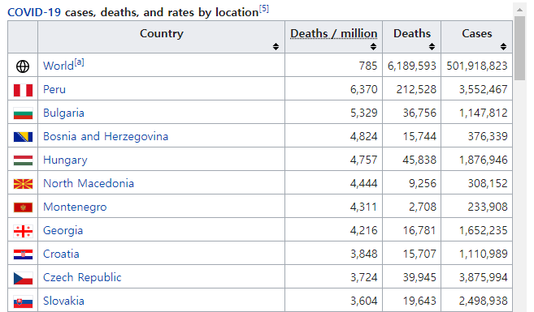

4 장 dplyr에 의한 데이터 다듬기
R에 입력된 데이터 세트는 대부분의 경우 바로 통계분석이 가능한 상태가 아니다. 분석에 필요한 적절한 변수가 없거나, 특정 조건을 만족하는 자료만을 선택해야 하거나, 자료의 순서를 바꿔야 하거나, 그룹별로 자료를 합치거나 또는 나눠야 하는 등등의 작업이 필요한 경우가 대부분이다. 이러한 데이터 다듬기는 최적의 통계 예측모형 적합 등을 위해 반드시 필요한 절차이지만, 시간이 매우 많이 소요되는 힘든 작업이다. 따라서 일관된 법칙에 따라 편리하고 효율적으로 적용할 수 있는 데이터 다듬기 기법이 절실하게 필요한 상황이라고 하겠다.
통계 데이터 세트는 변수가 열, 관찰값이 행을 이루고 있는 2차원 구조를 가지고 있으며 데이터 프레임으로 입력된다. 이 장에서 살펴볼 내용은 패키지 dplyr에서 수행할 수 있는 다양한 데이터 프레임 다듬기 기법이다. 먼저 데이터 프레임 다듬기 작업에 사용되는 매우 중요하면서도 기본적인 dplyr 함수들을 살펴볼 것이다. 이어서 이러한 기본 dplyr 함수들 이 그룹으로 구분된 데이터에 대해서는 어떻게 작용을 하는지 살펴볼 것이며, 여러 개의 변수들을 대상으로 반복적으로 실행해야 하는 동일한 작업을 함수 across()를 이용하면 얼마나 간편하게 할 수 있는지를 살펴볼 것이다. 또한 행 단위로 작업이 이루어져야 하는 경우에 함수 rowwise()가 어떤 역할을 하는지도 살펴볼 것이다.
기본 dplyr 함수들은 세 가지 그룹으로 나누어 볼 수 있다. 함수 filter(), slice(), arrange(), distinct()와 같이 데이터 프레임의 행을 작업 대상으로 하는 함수가 있고, 함수 select(), rename(), mutate(), relocate()와 같이 열을 대상으로 작업을 하는 함수가 있으며, 요약 통계량을 계산하는 함수 summarise()가 있다.
기본 dplyr 함수들이 공통으로 갖고 있는 특징은 데이터 프레임(또는 tibble)이 함수들의 첫 번째 입력요소라는 것이다. 두 번째 특징은 각 함수 안에서 입력된 데이터 프레임의 변수를 인덱싱 기호($) 없이 사용할 수 있다는 것이다. 마지막 특징은 이 함수들이 생성하는 결과는 또 다른 데이터 프레임(또는 tibble)이라는 것이다. 기본 함수들이 갖고 있는 이러한 특징을 이용해서 조금 더 효율적인 프로그램이 가능하도록 dplyr에서는 pipe 기능을 사용하도록 하자.
- Pipe 기능
Pipe 기능이란 한 명령문의 결과물을 바로 다음 명령문의 입력 요소로 직접 사용할 수 있도록 명령문들을 서로 연결하는 기능을 의미한다. 이것이 가능하다면, 분석 중간 단계로 생성되는 무수한 객체들을 따로 저장할 필요가 없기 때문에 프로그램 자체가 매우 깔끔하게 정리되며, 분석 흐름을 쉽게 이해할 수 있게 된다. Pipe 연산자 %>%는 tidyverse에 속한 패키지인 magrittr에서 정의된 것으로 tidyverse에 속한 다른 패키지에서도 사용이 가능하다. RStudio에서 pipe 연산자 %>%의 입력은 Shift+Ctrl+M 키를 함께 누르면 된다.
기본적인 형태는 lhs %>% rhs인데, lhs는 데이터 객체이거나 데이터 객체를 생성하는 함수가 되고, rhs는 lhs를 입력 요소로 하는 함수가 된다. 예를 들어 x %>% f()는 객체 x를 함수 f()의 입력 요소로 하는 f(x)를 의미한다. 만일 rhs에 다른 요소가 있다면 lhs는 rhs의 첫 번째 입력 요소가 된다. 따라서 x %>% f(y)는 f(x,y)를 의미한다. 만일 lhs가 rhs의 첫 번째 요소가 아닌 경우에는 원하는 위치에 점(.)을 찍어야 한다. 예를 들어, x %>% f(y,.)은 f(y,x)를 의미한다.
4.1 행을 작업 대상으로 하는 함수
4.1.1 조건에 의한 행 선택: filter()
함수 filter()를 이용하면, 주어진 데이터 프레임에서 특정한 조건을 만족하는 행을 선택 할 수 있다. 조건을 설정할 때는 비교 연산자(>, >=, <, <=, !=, ==)와 논리 연산자(&, |, !)가 사용되며, 연산자 %in%이 매우 유용하게 사용된다. 예제를 통해 자세한 사용법을 확인해 보자.
- 예제:
mtcars
변수 mpg의 값이 30 이상인 자동차를 선택해 보자. 함수 filter()에 전통적인 데이터 프레임을 입력하면 결과로 전통적인 데이터 프레임이 출력되고, tibble을 입력하면 결과가 tibble로 출력된다. 데이터 프레임 mtcars를 tibble로 전환하고 선택 조건과 더불어 함수 filter()에 입력해 보자.
> library(tidyverse)> mtcars_t <- as_tibble(mtcars)
> mtcars_t %>% filter(mpg >= 30)
# A tibble: 4 × 11
mpg cyl disp hp drat wt qsec vs am gear carb
<dbl> <dbl> <dbl> <dbl> <dbl> <dbl> <dbl> <dbl> <dbl> <dbl> <dbl>
1 32.4 4 78.7 66 4.08 2.2 19.5 1 1 4 1
2 30.4 4 75.7 52 4.93 1.62 18.5 1 1 4 2
3 33.9 4 71.1 65 4.22 1.84 19.9 1 1 4 1
4 30.4 4 95.1 113 3.77 1.51 16.9 1 1 5 2변수 mpg의 값이 30 이상이고 변수 wt의 값이 1.8 미만인 자동차를 선택해 보자. 함수 filter()에서는 콤마(,)가 논리 연산자 & 와 같은 기능을 갖고 있다.
> mtcars_t %>% filter(mpg >= 30, wt < 1.8)
# A tibble: 2 × 11
mpg cyl disp hp drat wt qsec vs am gear carb
<dbl> <dbl> <dbl> <dbl> <dbl> <dbl> <dbl> <dbl> <dbl> <dbl> <dbl>
1 30.4 4 75.7 52 4.93 1.62 18.5 1 1 4 2
2 30.4 4 95.1 113 3.77 1.51 16.9 1 1 5 2변수 mpg의 값이 30 이하이고, 변수 cyl의 값이 6 또는 8이며, 변수 am의 값이 1인 자동차를 선택해 보자. 이 경우에, 변수 cyl의 값이 6 또는 8인 사건에 대하여 논리 연산자를 사용해서 cyl == 6|cyl == 8으로 조건을 설정하는 것보다는, cyl %in% c(6,8)로 쓰는 것이 훨씬 간단한 방법이 된다.
> mtcars_t %>% filter(mpg <= 30, cyl %in% c(6,8), am == 1)
# A tibble: 5 × 11
mpg cyl disp hp drat wt qsec vs am gear carb
<dbl> <dbl> <dbl> <dbl> <dbl> <dbl> <dbl> <dbl> <dbl> <dbl> <dbl>
1 21 6 160 110 3.9 2.62 16.5 0 1 4 4
2 21 6 160 110 3.9 2.88 17.0 0 1 4 4
3 15.8 8 351 264 4.22 3.17 14.5 0 1 5 4
4 19.7 6 145 175 3.62 2.77 15.5 0 1 5 6
5 15 8 301 335 3.54 3.57 14.6 0 1 5 8변수 mpg의 값이 mpg의 중앙값과 \(Q_{3}\) 사이에 있는 자동차를 선택해 보자. 여기서 \(Q_{3}\)는 0.75분위수를 의미하는 것으로서, \(p\) 분위수란 전체 데이터 중 \((100 \times p)\)%데이터보다는 크고, 나머지 \((100 \times (1-p))\)% 데이터보다는 작은 수를 의미한다. 분위수의 계산은 함수 quantile()로 하는데, 벡터 x의 0.75분위수의 계산은 quantile(x, probs=0.75)로 할 수 있다.
> mtcars_t %>%
+ filter(
+ mpg >= median(mpg), mpg <= quantile(mpg, probs = 0.75)
+ )
# A tibble: 10 × 11
mpg cyl disp hp drat wt qsec vs am gear carb
<dbl> <dbl> <dbl> <dbl> <dbl> <dbl> <dbl> <dbl> <dbl> <dbl> <dbl>
1 21 6 160 110 3.9 2.62 16.5 0 1 4 4
2 21 6 160 110 3.9 2.88 17.0 0 1 4 4
3 22.8 4 108 93 3.85 2.32 18.6 1 1 4 1
4 21.4 6 258 110 3.08 3.22 19.4 1 0 3 1
5 22.8 4 141. 95 3.92 3.15 22.9 1 0 4 2
6 19.2 6 168. 123 3.92 3.44 18.3 1 0 4 4
7 21.5 4 120. 97 3.7 2.46 20.0 1 0 3 1
8 19.2 8 400 175 3.08 3.84 17.0 0 0 3 2
9 19.7 6 145 175 3.62 2.77 15.5 0 1 5 6
10 21.4 4 121 109 4.11 2.78 18.6 1 1 4 2벡터 x가 특정 두 숫자 사이에 있는지를 확인하는 방법은 x >= left & x <= right가 되는데, 이것을 함수 between()을 이용해서 between(x, left, right)로 할 수 있다.
> between(1:5, 2, 4)
[1] FALSE TRUE TRUE TRUE FALSE따라서 위 예제는 다음과 같이 실행해도 동일한 결과를 얻는다.
> mtcars_t %>%
+ filter(
+ between(mpg, median(mpg), quantile(mpg, probs = 0.75))
+ )
# A tibble: 10 × 11
mpg cyl disp hp drat wt qsec vs am gear carb
<dbl> <dbl> <dbl> <dbl> <dbl> <dbl> <dbl> <dbl> <dbl> <dbl> <dbl>
1 21 6 160 110 3.9 2.62 16.5 0 1 4 4
2 21 6 160 110 3.9 2.88 17.0 0 1 4 4
3 22.8 4 108 93 3.85 2.32 18.6 1 1 4 1
4 21.4 6 258 110 3.08 3.22 19.4 1 0 3 1
5 22.8 4 141. 95 3.92 3.15 22.9 1 0 4 2
6 19.2 6 168. 123 3.92 3.44 18.3 1 0 4 4
7 21.5 4 120. 97 3.7 2.46 20.0 1 0 3 1
8 19.2 8 400 175 3.08 3.84 17.0 0 0 3 2
9 19.7 6 145 175 3.62 2.77 15.5 0 1 5 6
10 21.4 4 121 109 4.11 2.78 18.6 1 1 4 2- 예제:
airquality
데이터 프레임 airquality는 1973년 5월부터 9월까지 미국 뉴욕시의 공기의 질과 관련된 조사 결과를 담은 데이터 세트이다. airs라는 이름의 tibble로 전환하고, 처음 5개 케이스를 출력해 보자.
> airs <- as_tibble(airquality) %>%
+ print(n = 5)
# A tibble: 153 × 6
Ozone Solar.R Wind Temp Month Day
<int> <int> <dbl> <int> <int> <int>
1 41 190 7.4 67 5 1
2 36 118 8 72 5 2
3 12 149 12.6 74 5 3
4 18 313 11.5 62 5 4
5 NA NA 14.3 56 5 5
# … with 148 more rows
# ℹ Use `print(n = ...)` to see more rows변수 Ozone 또는 Solar.R이 결측값인 행을 선택해 보자. 결측값의 확인은 함수 is.na()로 할 수 있다.
> airs %>%
+ filter(is.na(Ozone) | is.na(Solar.R)) %>%
+ print(n = 5)
# A tibble: 42 × 6
Ozone Solar.R Wind Temp Month Day
<int> <int> <dbl> <int> <int> <int>
1 NA NA 14.3 56 5 5
2 28 NA 14.9 66 5 6
3 NA 194 8.6 69 5 10
4 7 NA 6.9 74 5 11
5 NA 66 16.6 57 5 25
# … with 37 more rows
# ℹ Use `print(n = ...)` to see more rows4.1.2 위치에 의한 행 선택: slice() 및 그와 관련된 함수
위치에 의한 행 선택이란 데이터 프레임에서 선택하고자 하는 행 번호를 지정해서 선택하는 것을 의미한다.
- 함수
slice()에 의한 행 선택
함수 slice()에는 행의 번호를 직접 지정해서 특정 행을 선택하거나 제거할 수 있다. 양의 정수를 입력하면 해당 위치의 행이 선택되고, 음의 정수를 입력하면 해당 위치의 행이 제거된다. 입력되는 정수는 모두 양수이거나 모두 음수이어야 한다. 데이터 프레임 iris를 tibble로 전환하고 5번째 행부터 10번째 행까지 선택해 보자.
> iris_t <- as_tibble(iris)
> iris_t %>% slice(5:10)
# A tibble: 6 × 5
Sepal.Length Sepal.Width Petal.Length Petal.Width Species
<dbl> <dbl> <dbl> <dbl> <fct>
1 5 3.6 1.4 0.2 setosa
2 5.4 3.9 1.7 0.4 setosa
3 4.6 3.4 1.4 0.3 setosa
4 5 3.4 1.5 0.2 setosa
5 4.4 2.9 1.4 0.2 setosa
6 4.9 3.1 1.5 0.1 setosa 이번에는 5번째 행부터 10번째 행을 제거해 보자.
> iris_t %>%
+ slice(-(5:10)) %>%
+ print(n = 3)
# A tibble: 144 × 5
Sepal.Length Sepal.Width Petal.Length Petal.Width Species
<dbl> <dbl> <dbl> <dbl> <fct>
1 5.1 3.5 1.4 0.2 setosa
2 4.9 3 1.4 0.2 setosa
3 4.7 3.2 1.3 0.2 setosa
# … with 141 more rows
# ℹ Use `print(n = ...)` to see more rows이번에는 iris의 마지막 행을 선택해 보자. 이 경우 유용하게 사용될 함수가 n()이다. 이 함수는 데이터 프레임의 행의 개수를 세는 함수로서 단독으로는 사용될 수 없고 dplyr 기본 함수들과 함께 사용되어야 한다.
> iris_t %>%
+ slice(n())
# A tibble: 1 × 5
Sepal.Length Sepal.Width Petal.Length Petal.Width Species
<dbl> <dbl> <dbl> <dbl> <fct>
1 5.9 3 5.1 1.8 virginica- 함수
slice_head()와slice_tail()에 의한 행 선택
데이터 프레임의 처음 몇 개 행을 선택하거나 마지막 몇 개 행을 선택하고자 할 때 사용되는 함수이다. 행의 개수를 지정하는 경우에는 n을 사용하고 행의 비율을 지정하는 경우에 는 prop를 사용하면 된다. 데이터 프레임 iris의 처음 3개 행과 마지막 3개 행을 각각 선택해 보자.
> iris_t %>%
+ slice_head(n = 3)
# A tibble: 3 × 5
Sepal.Length Sepal.Width Petal.Length Petal.Width Species
<dbl> <dbl> <dbl> <dbl> <fct>
1 5.1 3.5 1.4 0.2 setosa
2 4.9 3 1.4 0.2 setosa
3 4.7 3.2 1.3 0.2 setosa > iris_t %>%
+ slice_tail(n = 3)
# A tibble: 3 × 5
Sepal.Length Sepal.Width Petal.Length Petal.Width Species
<dbl> <dbl> <dbl> <dbl> <fct>
1 6.5 3 5.2 2 virginica
2 6.2 3.4 5.4 2.3 virginica
3 5.9 3 5.1 1.8 virginica- 함수
slice_sample()에 의한 행 선택
데이터 프레임의 일부 행을 단순임의추출방법으로 선택할 때 사용되는 함수이다. 행의 개수를 지정해서 추출하는 경우에는 n을 사용하고, 행의 비율을 지정해서 추출하는 경우에는 prop를 사용하면 된다. 두 함수 모두 비복원추출이 디폴트로 적용되며, 만일 복원추출을 원한다면, replace=TRUE를 입력하면 된다. 데이터 프레임 iris에서 3개 행을 임의추출해 보자. 또한 전체 행 중 2%의 행을 비복원추출과 복원추출로 각각 선택해 보자.
> iris_t %>%
+ slice_sample(n = 3)
# A tibble: 3 × 5
Sepal.Length Sepal.Width Petal.Length Petal.Width Species
<dbl> <dbl> <dbl> <dbl> <fct>
1 6.2 2.8 4.8 1.8 virginica
2 4.9 3.6 1.4 0.1 setosa
3 6.1 3 4.6 1.4 versicolor> iris_t %>%
+ slice_sample(prop = 0.02)
# A tibble: 3 × 5
Sepal.Length Sepal.Width Petal.Length Petal.Width Species
<dbl> <dbl> <dbl> <dbl> <fct>
1 6.3 2.5 4.9 1.5 versicolor
2 4.6 3.6 1 0.2 setosa
3 5.5 2.4 3.7 1 versicolor> iris_t %>%
+ slice_sample(prop = 0.02, replace = TRUE)
# A tibble: 3 × 5
Sepal.Length Sepal.Width Petal.Length Petal.Width Species
<dbl> <dbl> <dbl> <dbl> <fct>
1 6.7 3.1 5.6 2.4 virginica
2 5.7 2.9 4.2 1.3 versicolor
3 7.7 3.8 6.7 2.2 virginica - 함수
slice_max()와slice_min()에 의한 행 선택
특정 변수가 가장 큰 값을 갖거나 혹은 가장 작은 값을 갖는 행을 선택할 때 사용되는 함수이다. 기준으로 사용할 변수를 입력하고 이어서 행의 개수를 지정하는 경우에는 n을, 행의 비율을 지정하는 경우에는 prop를 입력하면 된다. 데이터 프레임 iris에서 변수 Sepal.Width의 값이 가장 큰 두 개 행을 선택해 보자.
> iris_t %>%
+ slice_max(Sepal.Width, n = 2)
# A tibble: 2 × 5
Sepal.Length Sepal.Width Petal.Length Petal.Width Species
<dbl> <dbl> <dbl> <dbl> <fct>
1 5.7 4.4 1.5 0.4 setosa
2 5.5 4.2 1.4 0.2 setosa 이번에는 Petal.Length의 값이 가장 작은 두 개 행을 선택해 보자.
> iris_t %>%
+ slice_min(Petal.Length, n = 2)
# A tibble: 2 × 5
Sepal.Length Sepal.Width Petal.Length Petal.Width Species
<dbl> <dbl> <dbl> <dbl> <fct>
1 4.6 3.6 1 0.2 setosa
2 4.3 3 1.1 0.1 setosa 4.1.3 행의 정렬: arrange()
함수 arrange()는 특정 변수를 기준으로 데이터 프레임의 행을 재배열할 때 사용된다. 함수에는 정렬의 기준이 되는 변수를 입력하면 되는데, 2개 이상의 정렬 기준 변수를 입력하게 되면 추가된 변수는 앞선 변수가 같은 값을 갖는 행들의 정렬 기준으로 사용된다. 정렬은 오름차순이 디폴트이며, 내림차순으로 배열하고자 할 때에는 기준 변수를 함수 desc()와 함께 사용해야 한다.
- 예제:
mtcars
데이터 프레임 mtcars를 tibble로 전환하고 변수 mpg의 값이 가장 좋지 않은 자동차부터 시작해서 더 좋아지는 순서로 다시 배열해 보자. 연비가 좋지 않다는 것은 연비가 낮다는 것을 의미하는 것이므로 변수 mpg를 오름차순 정렬 변수로 사용하면 된다.
> mtcars_t <- as_tibble(mtcars)
> mtcars_t %>%
+ arrange(mpg) %>%
+ print(n = 5)
# A tibble: 32 × 11
mpg cyl disp hp drat wt qsec vs am gear carb
<dbl> <dbl> <dbl> <dbl> <dbl> <dbl> <dbl> <dbl> <dbl> <dbl> <dbl>
1 10.4 8 472 205 2.93 5.25 18.0 0 0 3 4
2 10.4 8 460 215 3 5.42 17.8 0 0 3 4
3 13.3 8 350 245 3.73 3.84 15.4 0 0 3 4
4 14.3 8 360 245 3.21 3.57 15.8 0 0 3 4
5 14.7 8 440 230 3.23 5.34 17.4 0 0 3 4
# … with 27 more rows
# ℹ Use `print(n = ...)` to see more rows데이터 프레임 mtcars_t를 변수 mpg의 값이 가장 좋지 않은 자동차부터 시작해서 더 좋아지는 순서로 다시 배열을 하되, mpg 값이 같은 자동차의 경우에는 변수 wt의 값이 높은 자동차부터 배열해 보자. 변수 wt를 두 번째 정렬 기준 변수로 입력하되, 내림차순 정렬이 필요하므로 함수 desc()를 이용한다.
> mtcars_t %>%
+ arrange(mpg, desc(wt)) %>%
+ print(n = 5)
# A tibble: 32 × 11
mpg cyl disp hp drat wt qsec vs am gear carb
<dbl> <dbl> <dbl> <dbl> <dbl> <dbl> <dbl> <dbl> <dbl> <dbl> <dbl>
1 10.4 8 460 215 3 5.42 17.8 0 0 3 4
2 10.4 8 472 205 2.93 5.25 18.0 0 0 3 4
3 13.3 8 350 245 3.73 3.84 15.4 0 0 3 4
4 14.3 8 360 245 3.21 3.57 15.8 0 0 3 4
5 14.7 8 440 230 3.23 5.34 17.4 0 0 3 4
# … with 27 more rows
# ℹ Use `print(n = ...)` to see more rows- 예제:
airquality
데이터 프레임 airquality를 tibble로 전환하고, 5월 1일부터 5월 10일까지의 자료만을 대상으로 변수 Ozone의 값이 가장 낮았던 날부터 다시 배열해 보자.
> airs_1 <- as_tibble(airquality) %>%
+ filter(Month == 5, Day <= 10)
> airs_1 %>%
+ arrange(Ozone)
# A tibble: 10 × 6
Ozone Solar.R Wind Temp Month Day
<int> <int> <dbl> <int> <int> <int>
1 8 19 20.1 61 5 9
2 12 149 12.6 74 5 3
3 18 313 11.5 62 5 4
4 19 99 13.8 59 5 8
5 23 299 8.6 65 5 7
6 28 NA 14.9 66 5 6
7 36 118 8 72 5 2
8 41 190 7.4 67 5 1
9 NA NA 14.3 56 5 5
10 NA 194 8.6 69 5 10위의 정렬 결과를 보면 변수 Ozone이 결측값인 행이 가장 뒤로 배열되어 있다. 이것이 문제는 아니지만, 어떤 경우에는 결측값인 행을 가장 앞으로 배열하는 것이 필요할 때도 있다. 데이터 프레임 airs_1을 변수 Ozone이 결측값인 행부터 다시 배열해 보자. 이것은 배열 기준으로 논리형 벡터를 사용해야 되는 문제인데, TRUE와 FALSE의 배열에서 FALSE가 우선 순위에 있기 때문에 !is.na(Ozone)을 배열 기준으로 사용하면 된다.
> airs_1 %>%
+ arrange(!is.na(Ozone))
# A tibble: 10 × 6
Ozone Solar.R Wind Temp Month Day
<int> <int> <dbl> <int> <int> <int>
1 NA NA 14.3 56 5 5
2 NA 194 8.6 69 5 10
3 41 190 7.4 67 5 1
4 36 118 8 72 5 2
5 12 149 12.6 74 5 3
6 18 313 11.5 62 5 4
7 28 NA 14.9 66 5 6
8 23 299 8.6 65 5 7
9 19 99 13.8 59 5 8
10 8 19 20.1 61 5 9이번에는 데이터 프레임 airs_1을 변수 Ozone의 값이 가장 높은 날부터 다시 배열하되 결측값이 있는 행을 가장 앞으로 배열해 보자. 이때는 !is.na(Ozone)을 첫 번째 배열 기준으로 하여 결측값이 있는 행을 가장 앞으로 배치하고, desc(Ozone)을 두 번째 배열 기준으로 입력해서 결측값이 아닌 행들을 변수 Ozone의 내림차순으로 다시 배열해야 된다.
> airs_1 %>%
+ arrange(!is.na(Ozone), desc(Ozone))
# A tibble: 10 × 6
Ozone Solar.R Wind Temp Month Day
<int> <int> <dbl> <int> <int> <int>
1 NA NA 14.3 56 5 5
2 NA 194 8.6 69 5 10
3 41 190 7.4 67 5 1
4 36 118 8 72 5 2
5 28 NA 14.9 66 5 6
6 23 299 8.6 65 5 7
7 19 99 13.8 59 5 8
8 18 313 11.5 62 5 4
9 12 149 12.6 74 5 3
10 8 19 20.1 61 5 94.1.4 중복된 행의 제거: distinct()
함수 distinct()는 중복 입력된 행을 제거할 때 사용된다. 함수에는 중복 여부를 결정할 변수를 입력하면 되는데, 입력한 변수가 없다면 모든 변수들을 대상으로 중복 여부를 결정한다. 옵션 .keep_all=TRUE가 지정되면 데이터 프레임의 모든 변수가 유지되는데, 이 경우에는 중복된 행 중에 처음 나타난 행이 유지된다. 단순한 형태의 데이터 프레임으로 함수 distinct()의 작동 방식을 살펴보자.
> df1 <- tibble(id = rep(1:3, times = 2:4), x1 = c(1:2, 1:3, 1:4))
> df1
# A tibble: 9 × 2
id x1
<int> <int>
1 1 1
2 1 2
3 2 1
4 2 2
5 2 3
6 3 1
7 3 2
8 3 3
9 3 4변수 id가 중복되지 않은 행들을 선택해 보자. 중복된 행 중에 처음 나타난 행이 유지됨을 알 수 있다.
> df1 %>%
+ distinct(id, .keep_all = TRUE)
# A tibble: 3 × 2
id x1
<int> <int>
1 1 1
2 2 1
3 3 1변수 id가 중복된 행 중에 첫 번째 위치한 행이 아닌, 변수 x1이 가장 큰 값을 갖는 행을 선택해 보자. 이 문제는 변수 id가 중복된 행들을 변수 x1의 내림차순으로 정렬한 데이터 프레임을 대상으로 중복된 행을 제거하면 된다.
> df1 %>%
+ arrange(id, desc(x1)) %>%
+ distinct(id, .keep_all = TRUE)
# A tibble: 3 × 2
id x1
<int> <int>
1 1 2
2 2 3
3 3 4함수 distinct()로 모든 변수의 값이 중복된 행을 제거하는 예제를 살펴보자.
> df2 <- tibble(id = rep(1:3, each = 2), x1 = c(2, 2, 3, 1, 4, 4))
> df2
# A tibble: 6 × 2
id x1
<int> <dbl>
1 1 2
2 1 2
3 2 3
4 2 1
5 3 4
6 3 4> df2 %>%
+ distinct()
# A tibble: 4 × 2
id x1
<int> <dbl>
1 1 2
2 2 3
3 2 1
4 3 44.2 열을 작업 대상으로 하는 함수
4.2.1 열의 선택: select()
데이터 세트의 크기가 커짐에 따라 변수의 개수가 수백 또는 수천이 되는 경우를 접하는 것이 더 이상 드문 상황은 아니다. 이러한 경우, 분석에 필요한 변수를 선택하여 데이터 세트의 크기를 줄이는 것은 매우 중요한 작업이 된다. 함수 select()에서는 패키지 tidyselect에 의해 구현되는 효과적인 변수 선택 방법을 이용할 수 있다. 여기에서 작동되는 <tidy-select> 방식은 기본적으로 변수들의 집합을 구성하는 것으로 생각하면 된다. 구체적인 선택 방법은 열 번호 또는 열 이름에 의한 방법과 변수의 유형에 의한 방법, 그리고 변 수 선택과 관련된 몇몇 함수들을 이용하는 방법으로 구분할 수 있다.
- 열 번호(또는 열 이름)에 의한 선택
가장 기본적인 방법은 열 번호를 콤마로 구분하여 나열하는 것이다. 연속된 열 변호는 콜론(:) 연산자를 이용해서 나타낼 수 있다.
데이터 프레임 mtcars의 행 이름을 변수 row.name으로 추가하고 tibble로 전환해 보자.
> mtcars_t <- mtcars %>%
+ rownames_to_column(var = "row.name") %>%
+ as_tibble() %>%
+ print(n = 3)
# A tibble: 32 × 12
row.name mpg cyl disp hp drat wt qsec vs am gear carb
<chr> <dbl> <dbl> <dbl> <dbl> <dbl> <dbl> <dbl> <dbl> <dbl> <dbl> <dbl>
1 Mazda RX4 21 6 160 110 3.9 2.62 16.5 0 1 4 4
2 Mazda RX4 W… 21 6 160 110 3.9 2.88 17.0 0 1 4 4
3 Datsun 710 22.8 4 108 93 3.85 2.32 18.6 1 1 4 1
# … with 29 more rows
# ℹ Use `print(n = ...)` to see more rows첫 번째에서 세 번째 변수, 그리고 일곱 번째 변수를 선택해 보자.
이 경우에는 열 번호를 함수 c() 없이 그냥 나열해도 결과는 동일하다.
> mtcars_t %>%
+ select(1:3, 7) %>%
+ print(n = 3)
# A tibble: 32 × 4
row.name mpg cyl wt
<chr> <dbl> <dbl> <dbl>
1 Mazda RX4 21 6 2.62
2 Mazda RX4 Wag 21 6 2.88
3 Datsun 710 22.8 4 2.32
# … with 29 more rows
# ℹ Use `print(n = ...)` to see more rows열(변수) 이름은 열 번호와 같은 취급을 받는다. 따라서 다음 방법도 같은 결과를 생성한다.
> mtcars_t %>%
+ select(row.name:cyl, wt) %>%
+ print(n = 3)
# A tibble: 32 × 4
row.name mpg cyl wt
<chr> <dbl> <dbl> <dbl>
1 Mazda RX4 21 6 2.62
2 Mazda RX4 Wag 21 6 2.88
3 Datsun 710 22.8 4 2.32
# … with 29 more rows
# ℹ Use `print(n = ...)` to see more rows열을 제거하고자 하는 경우에는 논리 부정 연산자(!) 또는 마이너스(-) 연산자를 사용해야 한다.
함수 c() 안에 제거하고자 하는 열 번호를 나열하고 논리 부정 연산자를 그 앞에 붙이면 나열된 열로 이루어진 집합의 여집합이 구성되어, 해당되는 열들이 제거되는 것이다. 첫 번째에서 세 번째 변수, 그리고 일곱 번째 변수를 제거해 보자.
> mtcars_t %>%
+ select(!c(1:3, 7)) %>%
+ print(n = 3)
# A tibble: 32 × 8
disp hp drat qsec vs am gear carb
<dbl> <dbl> <dbl> <dbl> <dbl> <dbl> <dbl> <dbl>
1 160 110 3.9 16.5 0 1 4 4
2 160 110 3.9 17.0 0 1 4 4
3 108 93 3.85 18.6 1 1 4 1
# … with 29 more rows
# ℹ Use `print(n = ...)` to see more rows마이너스 연산자는 차집합을 구성하게 된다. 예컨대 select(1:4, -1)은 처음 네 변수 중 첫 번째 변수를 제거하라는 의미가 된다. 그러나 만일 select(1:4, !1)과 같이 논리 부정 연산자를 대신 사용하면 처음 네 변수와 첫 번째 변수를 제외한 나머지 변수와의 합집합을 구성하는 것이 되어서 결국 모든 변수를 다 선택하게 된다.
비록 두 연산자의 의미는 다르지만, 마이너스 연산자가 첫 번째로 입력되면 같은 효과를 볼 수 있다. 따라서 첫 번째에서 세 번째 변수, 그리고 일곱 번째 변수의 제거는 다음과 같이 할 수도 있다.
> mtcars_t %>%
+ select(-c(1:3, 7)) %>%
+ print(n = 3)
# A tibble: 32 × 8
disp hp drat qsec vs am gear carb
<dbl> <dbl> <dbl> <dbl> <dbl> <dbl> <dbl> <dbl>
1 160 110 3.9 16.5 0 1 4 4
2 160 110 3.9 17.0 0 1 4 4
3 108 93 3.85 18.6 1 1 4 1
# … with 29 more rows
# ℹ Use `print(n = ...)` to see more rows- 변수 유형에 의한 선택
변수의 유형과 같은 특정 조건을 만족하는 변수 선택에 유용하게 사용되는 방법이다.
사용 방법은 함수 where()에 실행 결과가 TRUE 또는 FALSE 중 하나가 되는 일명 predicate 함수를 입력해서 그 결과가 TRUE가 되는 변수를 선택하는 것이다.
함수 where()에 입력되는 함수 형태는 두 가지로 구분된다.
첫 번째는 함수의 이름만 입력하는 형태이다.
예를 들어, 변수의 유형 파악은 함수 is.numeric() 또는 is.character() 등 is.*() 형태의 함수로 할 수 있는데, 숫자형 변수를 선택한다면 where(is.numeric), 문자형 변수를 선택한다면 where(is.character)와 같이 입력하는 것이다.
두 번째는 패키지 purrr 방식의 형태로써, 여러 함수를 결합하거나, 함수의 디폴트 값을 변경해서 사용하는 경우에 적용되는 방식이다.
기본적인 형태는 물결표(~)로 시작을 하며 .x를 개별 변수 대신 사용하면 된다.
예를 들어 평균 값이 5 이하인 변수를 선택한다면, where(~ mean(.x) <= 5)와 같이 입력하면 된다.
패키지 purrr은 core tidyverse에 속한 패키지로서 효율적인 프로그래밍 기법을 제공하고 있다.
자세한 소개는 7장에서 찾아볼 수 있다.
패키지 ggplot2의 데이터 프레임 mpg를 살펴보자.
> mpg %>% print(n = 3)
# A tibble: 234 × 11
manufacturer model displ year cyl trans drv cty hwy fl class
<chr> <chr> <dbl> <int> <int> <chr> <chr> <int> <int> <chr> <chr>
1 audi a4 1.8 1999 4 auto(l5) f 18 29 p compa…
2 audi a4 1.8 1999 4 manual(m5) f 21 29 p compa…
3 audi a4 2 2008 4 manual(m6) f 20 31 p compa…
# … with 231 more rows
# ℹ Use `print(n = ...)` to see more rows데이터 프레임 mpg에서 숫자형 변수만 선택해 보자.
> mpg %>%
+ select(where(is.numeric)) %>%
+ print(n = 3)
# A tibble: 234 × 5
displ year cyl cty hwy
<dbl> <int> <int> <int> <int>
1 1.8 1999 4 18 29
2 1.8 1999 4 21 29
3 2 2008 4 20 31
# … with 231 more rows
# ℹ Use `print(n = ...)` to see more rows몇 가지 변수 유형을 함께 고려해야 하는 경우에는 논리 연산자 &와 |을 사용하게 된다.
예를 들어 숫자형 변수이거나 문자형 변수의 선택은 다음과 같다.
> mpg %>%
+ select(where(is.numeric) | where(is.character)) %>%
+ print(n = 3)
# A tibble: 234 × 11
displ year cyl cty hwy manufacturer model trans drv fl class
<dbl> <int> <int> <int> <int> <chr> <chr> <chr> <chr> <chr> <chr>
1 1.8 1999 4 18 29 audi a4 auto(l5) f p compa…
2 1.8 1999 4 21 29 audi a4 manual(m5) f p compa…
3 2 2008 4 20 31 audi a4 manual(m6) f p compa…
# … with 231 more rows
# ℹ Use `print(n = ...)` to see more rows이번에는 숫자형 변수 중에 평균 값이 5 이하인 변수를 선택해 보자.
먼저 함수 select()를 연속해서 사용하는 방법이다.
> mpg %>%
+ select(where(is.numeric)) %>%
+ select(where(~ mean(.x) <= 5)) %>%
+ print(n = 3)
# A tibble: 234 × 1
displ
<dbl>
1 1.8
2 1.8
3 2
# … with 231 more rows
# ℹ Use `print(n = ...)` to see more rows조금 다른 방법은 && 연산자를 사용하는 방법이다.
> mpg %>%
+ select(where( ~ is.numeric(.x) && mean(.x) <= 5)) %>%
+ print(n = 3)
# A tibble: 234 × 1
displ
<dbl>
1 1.8
2 1.8
3 2
# … with 231 more rows
# ℹ Use `print(n = ...)` to see more rows&& 연산자는 &와 같이 AND 논리 연산자이지만, 수행 방식에는 차이가 있다.
& 논리 연산자는 벡터의 구성 요소별 비교 연산을 수행하지만,
&& 논리 연산자는 비교 대상 요소의 길이가 1이 되어야 하며, 왼쪽부터 차례로 비교 연산을 수행한다.
따라서 위 연산은 숫자형 변수 여부의 확인(is.numeric(.x)) 결과가 TRUE이고,
이어서 평균이 5 이하 여부의 확인(mean(.x) <= 5) 결과가 TRUE가 되는 변수만 선택하는 것이다.
길이가 1을 초과하는 경우에는 첫 번째 요소만이 사용되는데, R 버전 4.2.0부터 경고 문구가 나오고 있고, 이후에는 오류 처리가 될 것으로 예고되었다.
> (c(1, -1) > 0) && (-2 < 0)
Warning in (c(1, -1) > 0) && (-2 < 0): 'length(x) = 2 > 1' in coercion to
'logical(1)'
[1] TRUE
> (c(1, -1) > 0) & (-2 < 0)
[1] TRUE FALSE- 변수 선택과 관련된 함수의 이용
변수 선택에 매우 유용하게 사용되는 함수들이 있다. 먼저 특정 위치의 열을 선택할 때 사용할 수 있는 함수들이다.
everything(): 모든 변수 선택last_col(): 마지막 변수 선택
변수 이름을 구성하고 있는 문자열에 대한 매칭 작업으로 변수를 선택할 때 사용할 수 있는 함수들이다.
starts_with("x"): 이름이x로 시작하는 변수 선택ends_with("x"): 이름이x로 끝나는 변수 선택contains("x"): 이름에x가 있는 변수 선택num_range("x", 1:10):x1,x2, … ,x10과 동일
변수 이름이 입력된 문자형 벡터를 이용하여 변수를 선택할 때 사용할 수 있는 함수들 이다.
all_of(vec): 문자형 벡터vec에 이름이 입력된 변수 선택. 해당 데이터 프레임에 없는 변수 이름이vec에 입력되어 있으면 오류 발생.any_of(vec): 함수all_of()와 동일함. 단, 데이터 프레임에 없는 변수 이름이 입력 되어도 오류가 발생하지 않음.
예제로 데이터 프레임 mtcars_t에서 첫 번째 변수와 마지막 변수를 선택해 보자.
> mtcars_t %>%
+ select(1, last_col()) %>%
+ print(n = 3)
# A tibble: 32 × 2
row.name carb
<chr> <dbl>
1 Mazda RX4 4
2 Mazda RX4 Wag 4
3 Datsun 710 1
# … with 29 more rows
# ℹ Use `print(n = ...)` to see more rows이번에는 mtcars_t에서 이름이 m으로 시작하는 변수를 선택해 보자.
> mtcars_t %>%
+ select(starts_with("m")) %>%
+ print(n = 3)
# A tibble: 32 × 1
mpg
<dbl>
1 21
2 21
3 22.8
# … with 29 more rows
# ℹ Use `print(n = ...)` to see more rows이름이 p로 끝나는 변수도 선택해 보자.
> mtcars_t %>%
+ select(ends_with("p")) %>%
+ print(n = 3)
# A tibble: 32 × 2
disp hp
<dbl> <dbl>
1 160 110
2 160 110
3 108 93
# … with 29 more rows
# ℹ Use `print(n = ...)` to see more rows이름에 A가 있는 변수를 선택해 보자.
> mtcars_t %>%
+ select(contains("A")) %>%
+ print(n = 3)
# A tibble: 32 × 5
row.name drat am gear carb
<chr> <dbl> <dbl> <dbl> <dbl>
1 Mazda RX4 3.9 1 4 4
2 Mazda RX4 Wag 3.9 1 4 4
3 Datsun 710 3.85 1 4 1
# … with 29 more rows
# ℹ Use `print(n = ...)` to see more rows대문자 A가 이름에 있는 변수 선택을 요구했지만, 결과는 모두 소문자 a가 이름에 있는 변수가 선택되었다. 이런 결과가 나온 이유는 옵션 ignore.case = TRUE가 디폴트로 설정되어서 대문자와 소문자를 구분하지 않기 때문이다. 이 옵션은 함수 starts_with()와 ends_with()에도 동일하게 TRUE가 디폴트이다. 만일 대문자를 구분해서 문자열 매칭 작업을 하면 다음과 같이 해당되는 변수가 없다는 결과가 나온다.
> mtcars_t %>%
+ select(contains("A", ignore.case = FALSE))
# A tibble: 32 × 0
# ℹ Use `print(n = ...)` to see more rows문자형 벡터 vars에 다음과 같이 변수 이름을 입력해 보자. 앞에서 생성된 데이터 프레임 mtcars_t에는 변수 mpg와 wt는 있지만, 변수 model은 없는 상태이다.
> vars <- c("model", "mpg", "wt")함수 any_of()를 사용하면 mtcars_t에 있는 두 변수가 선택된다.
> mtcars_t %>%
+ select(any_of(vars)) %>%
+ print(n = 3)
# A tibble: 32 × 2
mpg wt
<dbl> <dbl>
1 21 2.62
2 21 2.88
3 22.8 2.32
# … with 29 more rows
# ℹ Use `print(n = ...)` to see more rows함수 all_of()를 사용하게 되면 model이 mtcars_t에 없는 변수이기 때문에 오류가 발생하게 된다.
> mtcars_t %>%
+ select(all_of(vars)) %>%
+ print(n = 3)
Error in `select()`:
! Can't subset columns that don't exist.
✖ Column `model` doesn't exist.당연한 것이지만, 지금까지 살펴본 세 가지 변수 선택 방법은 서로 혼합해서 사용할 수 있다. 예를 들어 숫자형 변수 중에 이름에 a가 있는 변수는 다음과 같이 선택할 수 있다.
> mtcars_t %>%
+ select(where(is.numeric) & contains("c")) %>%
+ print(n = 3)
# A tibble: 32 × 3
cyl qsec carb
<dbl> <dbl> <dbl>
1 6 16.5 4
2 6 17.0 4
3 4 18.6 1
# … with 29 more rows
# ℹ Use `print(n = ...)` to see more rows- 벡터 형태로 변수 선택: 함수
pull()
데이터 프레임의 한 변수를 선택하여 벡터로 추출하고자 한다면 함수 pull()을 사용하면 된다. 변수 선택 방법은 옵션 var에 변수 이름을 지정하거나, 위치를 나타내는 정수를 지정하는 것이다. 양의 정수는 첫 번째 변수를 시작점으로 하는 위치이고, 음의 정수는 마지막 변수 를 시작점으로 하는 위치이다. 디폴트는 var = -1로 설정되어 있어서, 마지막 변수가 선택된다. 데이터 프레임 mtcars를 대상으로 마지막 변수와 세 번째 변수, 그리고 변수 am을 벡터 형태로 선택해 보자.
> mtcars_t %>% pull()
[1] 4 4 1 1 2 1 4 2 2 4 4 3 3 3 4 4 4 1 2 1 1 2 2 4 2 1 2 2 4 6 8 2> mtcars_t %>% pull(var = 3)
[1] 6 6 4 6 8 6 8 4 4 6 6 8 8 8 8 8 8 4 4 4 4 8 8 8 8 4 4 4 8 6 8 4> mtcars_t %>% pull(var = am)
[1] 1 1 1 0 0 0 0 0 0 0 0 0 0 0 0 0 0 1 1 1 0 0 0 0 0 1 1 1 1 1 1 14.2.2 열 이름 변경: rename()과 rename_with()
변수 이름이 매우 복잡하거나 사용하기 불편해서 이름을 변경해야 하는 경우가 많다. 함수 select()로도 변수 이름을 변경할 수 있으나, 함수 내에서 이름이 명시되지 않은 변수는 선택되지 않은 변수가 되어 제거되고, 이름이 변경된 변수만 남게 된다. 변수에 새로운 이름을 주는 방식은 new_name = old_name이 되는데, old_name 자리에는 변수 이름 또는 변수의 열 번호가 올 수 있다.
> mtcars_t %>%
+ select(model = row.name) %>%
+ print(n = 3)
# A tibble: 32 × 1
model
<chr>
1 Mazda RX4
2 Mazda RX4 Wag
3 Datsun 710
# … with 29 more rows
# ℹ Use `print(n = ...)` to see more rows> mtcars_t %>%
+ select(model = 1) %>%
+ print(n = 3)
# A tibble: 32 × 1
model
<chr>
1 Mazda RX4
2 Mazda RX4 Wag
3 Datsun 710
# … with 29 more rows
# ℹ Use `print(n = ...)` to see more rows함수 select()에서 이름이 변경되지 않은 변수도 모두 그대로 유지하려면 함수 everything()을 함께 사용하면 된다.
> mtcars_t %>%
+ select(model = row.name, everything()) %>%
+ print(n = 3)
# A tibble: 32 × 12
model mpg cyl disp hp drat wt qsec vs am gear carb
<chr> <dbl> <dbl> <dbl> <dbl> <dbl> <dbl> <dbl> <dbl> <dbl> <dbl> <dbl>
1 Mazda RX4 21 6 160 110 3.9 2.62 16.5 0 1 4 4
2 Mazda RX4 W… 21 6 160 110 3.9 2.88 17.0 0 1 4 4
3 Datsun 710 22.8 4 108 93 3.85 2.32 18.6 1 1 4 1
# … with 29 more rows
# ℹ Use `print(n = ...)` to see more rows함수 rename()을 사용하면 이름이 변경되지 않은 변수도 모두 그대로 유지가 된다. 변수에 새로운 이름을 주는 방식은 함수 select()와 동일하게 new_name = old_name이다.
> mtcars_t %>%
+ rename(model = row.name) %>%
+ print(n = 3)
# A tibble: 32 × 12
model mpg cyl disp hp drat wt qsec vs am gear carb
<chr> <dbl> <dbl> <dbl> <dbl> <dbl> <dbl> <dbl> <dbl> <dbl> <dbl> <dbl>
1 Mazda RX4 21 6 160 110 3.9 2.62 16.5 0 1 4 4
2 Mazda RX4 W… 21 6 160 110 3.9 2.88 17.0 0 1 4 4
3 Datsun 710 22.8 4 108 93 3.85 2.32 18.6 1 1 4 1
# … with 29 more rows
# ℹ Use `print(n = ...)` to see more rows많은 변수의 이름을 어떤 공통된 양식에 따라 모두 바꿔야 하는 경우, 하나씩 new_name = old_name으로 변경하는 방식은 매우 비효율적이 될 수 있다. 예컨대 대문자로 입력된 변수 이름을 모두 소문자로 변경하거나, 이름 중간에 들어간 점(.)을 밑줄(_)로 변경해야 하는 경우에 하나씩 변경하는 방식이 아닌 해당되는 변수의 이름을 한꺼번에 모두 바꿀 수 있는 방식이 필요한 것이다. 이러한 작업은 함수 rename_with()로 할 수 있다.
데이터 프레임 mtcars_t의 모든 변수 이름을 대문자로 변경해 보자.
함수 rename_with()에는 기존의 변수 이름을 새로운 이름으로 바꿀 수 있는 함수를 지정해야 한다.
모든 변수를 대문자로 변경하는 작업이므로 함수 toupper()를 사용하면 되는데,
하나의 함수만을 사용하는 경우에는 함수 이름을 입력하면 된다.
> mtcars_t %>%
+ rename_with(toupper) %>%
+ print(n = 3)
# A tibble: 32 × 12
ROW.NAME MPG CYL DISP HP DRAT WT QSEC VS AM GEAR CARB
<chr> <dbl> <dbl> <dbl> <dbl> <dbl> <dbl> <dbl> <dbl> <dbl> <dbl> <dbl>
1 Mazda RX4 21 6 160 110 3.9 2.62 16.5 0 1 4 4
2 Mazda RX4 W… 21 6 160 110 3.9 2.88 17.0 0 1 4 4
3 Datsun 710 22.8 4 108 93 3.85 2.32 18.6 1 1 4 1
# … with 29 more rows
# ℹ Use `print(n = ...)` to see more rows모든 변수가 이름 변경 대상이 되는 것이 디폴트이다. 변경 대상 변수를 선택을 해야 하는 경우에는 함수 select()에서 사용했던 <tidy-select>의 방식으로 선택하여 함수 rename_with()의 세 번째 입력요소로 지정하면 된다. 이름에 a가 포함되어 있는 변수의 이름을 대문자로 바꾸어 보자.
> mtcars_t %>%
+ rename_with(toupper, contains("a")) %>%
+ print(n = 3)
# A tibble: 32 × 12
ROW.NAME mpg cyl disp hp DRAT wt qsec vs AM GEAR CARB
<chr> <dbl> <dbl> <dbl> <dbl> <dbl> <dbl> <dbl> <dbl> <dbl> <dbl> <dbl>
1 Mazda RX4 21 6 160 110 3.9 2.62 16.5 0 1 4 4
2 Mazda RX4 W… 21 6 160 110 3.9 2.88 17.0 0 1 4 4
3 Datsun 710 22.8 4 108 93 3.85 2.32 18.6 1 1 4 1
# … with 29 more rows
# ℹ Use `print(n = ...)` to see more rows데이터 프레임 iris의 변수 이름에는 점(.)이 포함되어 있고, 대문자도 있다.
먼저 변수 이름에 있는 점을 밑줄로 바꿔보자.
특정 문자의 치환은 함수 gsub()로 할 수 있는데,
메타 문자인 점(.)을 치환해야 하기 때문에 옵션 fixed = TRUE를 포함해야 한다.
따라서 함수 rename_with()에 입력되는 이름 변경을 위한 함수는 purrr 형태를 취하게 된다.
> iris %>%
+ as_tibble() %>%
+ rename_with(~ gsub(".", "_", .x, fixed = TRUE)) %>%
+ print(n = 3)
# A tibble: 150 × 5
Sepal_Length Sepal_Width Petal_Length Petal_Width Species
<dbl> <dbl> <dbl> <dbl> <fct>
1 5.1 3.5 1.4 0.2 setosa
2 4.9 3 1.4 0.2 setosa
3 4.7 3.2 1.3 0.2 setosa
# … with 147 more rows
# ℹ Use `print(n = ...)` to see more rows이번에는 점을 밑줄로 바꾸고, 이름에는 있는 대문자를 모두 소문자로 바꾸어 보자.
> iris %>%
+ as_tibble() %>%
+ rename_with(~ tolower(gsub(".", "_", .x, fixed = TRUE))) %>%
+ print(n = 3)
# A tibble: 150 × 5
sepal_length sepal_width petal_length petal_width species
<dbl> <dbl> <dbl> <dbl> <fct>
1 5.1 3.5 1.4 0.2 setosa
2 4.9 3 1.4 0.2 setosa
3 4.7 3.2 1.3 0.2 setosa
# … with 147 more rows
# ℹ Use `print(n = ...)` to see more rows4.2.3 열의 위치 변경: relocate()
열의 위치를 변경해야 하는 경우에 사용할 수 있는 함수이다. 위치를 바꿀 열은 <tidy-select> 방식을 사용하여 선택할 수 있어서, 여러 열의 위치를 한꺼번에 옮길 수 있다. 제일 앞으로 이동되는 것이 디폴트 위치이며 옵션 .after 혹은 .before에서 위치를 지정할 수 있다.
데이터 프레임 iris의 마지막 변수 Species를 첫 번째 위치로 이동해 보자.
> iris_t <- as_tibble(iris)> iris_t %>%
+ relocate(Species) %>%
+ print(n = 3)
# A tibble: 150 × 5
Species Sepal.Length Sepal.Width Petal.Length Petal.Width
<fct> <dbl> <dbl> <dbl> <dbl>
1 setosa 5.1 3.5 1.4 0.2
2 setosa 4.9 3 1.4 0.2
3 setosa 4.7 3.2 1.3 0.2
# … with 147 more rows
# ℹ Use `print(n = ...)` to see more rows이름이 th로 끝나는 변수를 모두 Species 다음으로 이동하면 변수 Species를 첫 번째 위치로 이동하는 것이 된다.
> iris_t %>%
+ relocate(ends_with("th"), .after = Species) %>%
+ print(n = 3)
# A tibble: 150 × 5
Species Sepal.Length Sepal.Width Petal.Length Petal.Width
<fct> <dbl> <dbl> <dbl> <dbl>
1 setosa 5.1 3.5 1.4 0.2
2 setosa 4.9 3 1.4 0.2
3 setosa 4.7 3.2 1.3 0.2
# … with 147 more rows
# ℹ Use `print(n = ...)` to see more rows특정 변수를 제일 앞으로 이동하는 작업은 함수 select()에 everything()을 함께 사용해서 할 수도 있다.
> iris_t %>%
+ select(Species, everything()) %>%
+ print(n = 3)
# A tibble: 150 × 5
Species Sepal.Length Sepal.Width Petal.Length Petal.Width
<fct> <dbl> <dbl> <dbl> <dbl>
1 setosa 5.1 3.5 1.4 0.2
2 setosa 4.9 3 1.4 0.2
3 setosa 4.7 3.2 1.3 0.2
# … with 147 more rows
# ℹ Use `print(n = ...)` to see more rows4.2.4 새로운 열의 추가: mutate()와 transmute()
데이터 프레임을 구성하고 있는 기존의 변수들을 이용하여 새로운 변수를 만들어 데이터 프레임에 추가해야 할 경우가 종종 있다. 이러한 작업을 수행하는 함수가 mutate()이다.
데이터 프레임이 함수 mutate()의 첫 번째 입력 요소가 되고, 이어서 새로운 변수를 만드는 표현식이 차례로 입력된다.
새롭게 만들어진 변수는 데이터 프레임의 제일 마지막 변수로 추가되는 것이 디폴트이다.
만일 추가된 변수의 위치를 변경하고자 한다면, 옵션 .after 또는 .before에서 지정하면 된다.
만일 새롭게 만들어진 변수로만 데이터 프레임을 구성하고자 한다면 함수 transmute()를 사용하면 된다.
함수 mutate()와 transmute()에서 새로운 변수를 만들 때 유용하게 사용되는 함수들의 목록이 RStudio의 메뉴 Help > Cheatsheets > Data Transformation with dplyr에 잘 정리되어 있다.
- 예제:
mtcars
다음의 조건에 의하여 새로운 변수 kml과 gp_kml을 만들고 데이터 프레임에 첫 번째와 두번째 변수로 추가해 보자.
∙ 변수 kml: 1 mpg(mile per gallon)는 0.43 kml(kilometer per liter)
∙ 변수 gp_kml: kml이 10 이상이면 "good", 10 미만이면 "bad"
연속형 변수 kml을 기반으로 범주의 개수가 두 개인 범주형 변수 gp_kml를 생성하는 작업은 함수 if_else()를 사용하는 것이 효과적이다. 기본적인 사용법은 if_else(condition, true, false)이며 condition이 만족되면 true의 값을 갖고, 아니면 false의 값을 갖게 된다. 조건의 만족 여부에 따라 할당되는 두 가지 값의 유형은 같아야 한다.
> as_tibble(mtcars) %>%
+ mutate(kml = 0.43*mpg,
+ gp_kml = if_else(kml >= 10, "good", "bad"),
+ .before = 1) %>%
+ print(n=3)
# A tibble: 32 × 13
kml gp_kml mpg cyl disp hp drat wt qsec vs am gear carb
<dbl> <chr> <dbl> <dbl> <dbl> <dbl> <dbl> <dbl> <dbl> <dbl> <dbl> <dbl> <dbl>
1 9.03 bad 21 6 160 110 3.9 2.62 16.5 0 1 4 4
2 9.03 bad 21 6 160 110 3.9 2.88 17.0 0 1 4 4
3 9.80 bad 22.8 4 108 93 3.85 2.32 18.6 1 1 4 1
# … with 29 more rows
# ℹ Use `print(n = ...)` to see more rows만일 새롭게 생성된 변수만 유지하고 나머지 변수는 모두 삭제하려고 한다면, 함수 transmute()를 사용하면 된다.
> as_tibble(mtcars) %>%
+ transmute(kml = 0.43*mpg,
+ gp_kml = if_else(kml >= 10, "good", "bad")
+ ) %>%
+ print(n=3)
# A tibble: 32 × 2
kml gp_kml
<dbl> <chr>
1 9.03 bad
2 9.03 bad
3 9.80 bad
# … with 29 more rows
# ℹ Use `print(n = ...)` to see more rows연속형 변수를 기반으로 범주의 개수가 3개 이상이 되는 범주형 변수를 생성하려는 경우에 함수 if_else()를 사용하는 것은 적절하지 않을 수 있다. 이러한 경우에는 함수 case_when()이 효과적인 대안이 된다. 기본적인 형태는 LHS ~ RHS로서, LHS는 조건이고, RHS에는 할당하려는 값이 된다.
다음 구조에서는 condition_1이 TRUE이면 value_1, condition_1은 FALSE이나 condition_2가 TRUE이면 value_2, 두 조건 모두 FALSE이면 value_3를 출력하게 된다.
case_when(
condition_1 ~ value_1,
condition_2 ~ value_2,
TRUE ~ value_3
)LHS에 제시되는 조건들은 순서대로 평가가 된다. 따라서 가장 좁은 범위의 조건이 가장 먼저 제시되어야 하고, 범위를 넓혀가는 조건이 잇따라 제시되어야 한다. 제시되는 조건의 개수에는 제한이 없다. 또한 RHS에 제시된 값들은 모두 같은 유형이어야 한다.
이제 다음의 변경된 조건으로 변수 gp_kml을 생성해 보자.
∙ 변수 gp_kml: kml이 11 이상이면 "excellent", 11 미만 8 이상이면 "good", 8 미만이면 "bad"
> as_tibble(mtcars) %>%
+ mutate(kml = 0.43*mpg,
+ gp_kml = case_when(
+ kml < 8 ~ "bad",
+ kml < 11 ~ "good",
+ TRUE ~ "excellent"
+ ),
+ .before = 1) %>%
+ print(n=3)
# A tibble: 32 × 13
kml gp_kml mpg cyl disp hp drat wt qsec vs am gear carb
<dbl> <chr> <dbl> <dbl> <dbl> <dbl> <dbl> <dbl> <dbl> <dbl> <dbl> <dbl> <dbl>
1 9.03 good 21 6 160 110 3.9 2.62 16.5 0 1 4 4
2 9.03 good 21 6 160 110 3.9 2.88 17.0 0 1 4 4
3 9.80 good 22.8 4 108 93 3.85 2.32 18.6 1 1 4 1
# … with 29 more rows
# ℹ Use `print(n = ...)` to see more rowsLHS에 “excellent”에 대한 조건을 먼저 제시하려면 다음과 같이 진행하면 된다.
> as_tibble(mtcars) %>%
+ mutate(kml = 0.43*mpg,
+ gp_kml = case_when(
+ kml >= 11 ~ "excellent",
+ kml >= 8 ~ "good",
+ TRUE ~ "bad"
+ ),
+ .before = 1) %>%
+ print(n=3)
# A tibble: 32 × 13
kml gp_kml mpg cyl disp hp drat wt qsec vs am gear carb
<dbl> <chr> <dbl> <dbl> <dbl> <dbl> <dbl> <dbl> <dbl> <dbl> <dbl> <dbl> <dbl>
1 9.03 good 21 6 160 110 3.9 2.62 16.5 0 1 4 4
2 9.03 good 21 6 160 110 3.9 2.88 17.0 0 1 4 4
3 9.80 good 22.8 4 108 93 3.85 2.32 18.6 1 1 4 1
# … with 29 more rows
# ℹ Use `print(n = ...)` to see more rows4.3 여러 행 자료의 요약: summarise()
변수들의 요약통계량을 계산할 때 유용하게 사용되는 함수가 summarise()이다. 첫 번째 입력 요소는 데이터 프레임이고, 이어서 name = fun의 형태로 원하는 요약통계량 값을 계산할 함수와 열의 이름을 입력한다. 예를 들어 데이터 프레임 mpg의 변수 hwy의 전체 케이스와 서로 다른 값을 갖고 있는 케이스의 개수, 그리고 평균값을 계산해 보자. 전체 케이스는 함수 n()으로, 서로 다른 값을 갖는 케이스의 개수는 n_distinct()로 계산한다.
> mpg %>%
+ summarise(n = n(), n_hwy = n_distinct(hwy), avg_hwy = mean(hwy))
# A tibble: 1 × 3
n n_hwy avg_hwy
<int> <int> <dbl>
1 234 27 23.4dplyr 1.0.0 버전부터 길이가 2 이상이 되는 벡터를 결과로 출력하는 함수도 사용할 수 있게 됐다. 이 경우, 길이가 1인 요약통계량의 값이 함께 있다면 반복이 되어서 길이를 맞춘다.
> mpg %>%
+ summarise(avg_hwy = mean(hwy), rng_hwy = range(hwy))
# A tibble: 2 × 2
avg_hwy rng_hwy
<dbl> <int>
1 23.4 12
2 23.4 44길이가 서로 다른 벡터로는 데이터 프레임을 구성할 수 없다. 다만 예외적으로 길이가 1인 벡터에게만 반복을 허용하는 것이다. 따라서 평균값과 범위(최소, 최대), 그리고 사분위수(0.25분위수, 0.5분위수, 0.75분위수)를 함께 나타내려는 다음 시도는 잘못된 것이다.
> mpg %>%
+ summarise(avg_hwy = mean(hwy), rng_hwy = range(hwy),
+ q_hwy = quantile(hwy, probs = c(0.25,0.5,0.75)))
Error in `summarise()`:
! Problem while recycling `q_hwy = quantile(hwy, probs = c(0.25, 0.5,
0.75))`.
✖ `q_hwy` must be size 2 or 1, not 3.
ℹ An earlier column had size 2.함수 summarise()는 사실 그 자체만으로는 그렇게 특별히 유용한 함수라고 하기 어렵다. 그러나 전체 데이터를 몇 개의 그룹으로 구분하는 함수 group_by()와 함께 사용하면 매우 강력한 분석 도구가 된다.
4.4 그룹 데이터 프레임
dplyr 기본 함수들은 그룹으로 구분된 데이터 프레임을 대상으로 작업할 때 더욱 강력한 위력을 발휘할 수 있다. 이 절에서는 함수 group_by()를 사용하여 그룹 데이터 프레임을 생성하는 방법과 dplyr 기본 함수들이 그룹 데이터 프레임에서는 어떤 방식으로 작동되는지에 대해 살펴보도록 하자.
4.4.1 그룹 데이터 프레임의 생성: group_by()
함수 group_by()는 한 개 이상의 변수를 이용하여 전체 데이터를 그룹으로 구분하는 기능을 갖고 있다. 첫 번째 입력요소는 데이터 프레임이고, 이어서 그룹을 구분하는 데 사용될 변수를 나열하면 된다. 실행결과는 tibble이며, 실행 전의 tibble과 출력된 형태에서는 큰 차이를 볼 수 없으나 grouped_df라는 class 속성이 추가된 tibble이 된다.
> by_cyl <- mpg %>%
+ group_by(cyl) %>%
+ print(n = 3)
# A tibble: 234 × 11
# Groups: cyl [4]
manufacturer model displ year cyl trans drv cty hwy fl class
<chr> <chr> <dbl> <int> <int> <chr> <chr> <int> <int> <chr> <chr>
1 audi a4 1.8 1999 4 auto(l5) f 18 29 p compa…
2 audi a4 1.8 1999 4 manual(m5) f 21 29 p compa…
3 audi a4 2 2008 4 manual(m6) f 20 31 p compa…
# … with 231 more rows
# ℹ Use `print(n = ...)` to see more rows> by_cyl_drv <- mpg %>%
+ group_by(cyl, drv) %>%
+ print(n = 3)
# A tibble: 234 × 11
# Groups: cyl, drv [9]
manufacturer model displ year cyl trans drv cty hwy fl class
<chr> <chr> <dbl> <int> <int> <chr> <chr> <int> <int> <chr> <chr>
1 audi a4 1.8 1999 4 auto(l5) f 18 29 p compa…
2 audi a4 1.8 1999 4 manual(m5) f 21 29 p compa…
3 audi a4 2 2008 4 manual(m6) f 20 31 p compa…
# … with 231 more rows
# ℹ Use `print(n = ...)` to see more rows그룹 데이터 프레임 by_cyl를 출력해 보면 Groups: cyl [4]라는 결과가 나타나는데, 이것은 변수 cyl에 의해 4개 그룹이 구성되었다는 것을 의미한다. 또한 by_cyl_drv의 경우에는 cyl과 drv의 조합으로 9개 그룹이 생성되었다는 것을 알 수 있다.
- 그룹별 자료 개수 확인
각 그룹에 속한 자료의 개수는 함수 tally() 또는 count()를 사용하면 알 수 있다. 함수 tally()는 그룹 변수 지정 기능이 없어서 그룹 데이터 프레임을 입력하면 각 그룹별 자료의 개수를 출력하지만, 일반 데이터 프레임을 입력하면 전체 자료 개수를 출력한다.
> by_cyl %>% tally()
# A tibble: 4 × 2
cyl n
<int> <int>
1 4 81
2 5 4
3 6 79
4 8 70> mpg %>% tally()
# A tibble: 1 × 1
n
<int>
1 234반면에 함수 count()는 그룹 변수를 지정해서, 각 그룹별 자료의 개수를 계산할 수 있다.
> by_cyl %>% count()
# A tibble: 4 × 2
# Groups: cyl [4]
cyl n
<int> <int>
1 4 81
2 5 4
3 6 79
4 8 70> mpg %>% count(cyl)
# A tibble: 4 × 2
cyl n
<int> <int>
1 4 81
2 5 4
3 6 79
4 8 70- 그룹 변수의 변경
기존의 그룹 데이터 프레임에 그룹을 구성하는 변수를 추가해서 더 세분화된 그룹을 구성할 수 있다. 변수 cyl로 구성된 그룹 데이터 프레임에 drv로 생성되는 그룹을 추가하기 위해서는 옵션 .add=TRUE를 지정해야 한다.
> by_cyl %>%
+ group_by(drv, .add = TRUE) %>%
+ tally()
# A tibble: 9 × 3
# Groups: cyl [4]
cyl drv n
<int> <chr> <int>
1 4 4 23
2 4 f 58
3 5 f 4
4 6 4 32
5 6 f 43
6 6 r 4
7 8 4 48
8 8 f 1
9 8 r 21옵션 .add=TRUE를 추가하지 않으면 기존의 그룹 변수가 새로운 그룹 변수로 대체된다.
> by_cyl %>%
+ group_by(drv) %>%
+ tally()
# A tibble: 3 × 2
drv n
<chr> <int>
1 4 103
2 f 106
3 r 25함수 group_by()로 구성된 그룹은 함수 ungroup()으로 해체할 수 있다.
> by_cyl %>%
+ ungroup() %>%
+ tally()
# A tibble: 1 × 1
n
<int>
1 2344.4.2 그룹 데이터 프레임에서 기본 함수들의 작동 방식
지금부터는 그룹 데이터 프레임에서 dplyr 기본 함수들의 작동 방식을 예제를 통해서 살펴보자.
- 함수
summarise()
그룹 데이터 프레임에 대해서는 각 그룹별 요약 통계량을 계산한다. 예제로 데이터 프레임 airquality를 대상으로 다음의 문제를 해결해 보자.
변수
Ozone의 월별 평균값월별로 변수
Ozone의 결측값이 있는 날수와 실제 관측된 날수월별로 첫날과 마지막 날의 변수
Ozone의 값월별로 변수
Ozone의 가장 작은 값과 가장 큰 값월별로 변수
Ozone의 개별 값이 전체 기간 동안의 평균값보다 작은 날수
다섯 문제 모두 월별로 구분된 데이터 프레임이 필요하기 때문에 변수 Month로 그룹을 구성한 데이터 프레임을 만들어야 한다.
> airs_M <- airquality %>%
+ group_by(Month)변수 Ozone에는 많은 수의 결측값이 있다. 따라서 함수 mean()에는 반드시 옵션 na.rm = TRUE를 함께 입력해야 결측값을 제외한 평균값이 계산된다.
> # 1
> airs_M %>%
+ summarise(avg_OZ = mean(Ozone, na.rm = TRUE))
# A tibble: 5 × 2
Month avg_OZ
<int> <dbl>
1 5 23.6
2 6 29.4
3 7 59.1
4 8 60.0
5 9 31.4결측값이 있는 날수는 함수 is.na()로 생성된 논리형 벡터를 함수 sum()에 입력하여 TRUE의 개수를 세면 알 수 있다. 또한 실제 관측이 있던 날수는 결측값이 아닌 날수이므로 함수 is.na()의 결과를 반대로 바꿔주고 함수 sum()에 입력하면 된다.
> # 2
> airs_M %>%
+ summarise(n_miss = sum(is.na(Ozone)),
+ n_obs = sum(!is.na(Ozone)))
# A tibble: 5 × 3
Month n_miss n_obs
<int> <int> <int>
1 5 5 26
2 6 21 9
3 7 5 26
4 8 5 26
5 9 1 29월별 첫날과 마지막날의 변수 Ozone 값을 출력하기 위해서는 함수 first()와 last()를 이용해야 한다. 벡터 x에 대해서 first(x)와 last(x)는 각각 x[1]과 x[length(x)]의 결과가 출력된다. 유사한 기능을 가진 함수로 nth()가 있다. 벡터 x에 대해서 nth(x, 2)는 x[2]의 결과가 출력되며, nth(x, -2)는 끝에서 두 번째 자료인 x[length(x)-1]이 출력된다.
> # 3
> airs_M %>%
+ summarise(first_Oz = first(Ozone),
+ last_Oz = last(Ozone))
# A tibble: 5 × 3
Month first_Oz last_Oz
<int> <int> <int>
1 5 41 37
2 6 NA NA
3 7 135 59
4 8 39 85
5 9 96 20함수 max()와 min()도 옵션 na.rm = TRUE을 입력해야 결측값을 제외하고 가장 큰 값과 가장 작은 값을 구한다.
> # 4
> airs_M %>%
+ summarise(max_Oz = max(Ozone, na.rm = TRUE),
+ min_Oz = min(Ozone, na.rm = TRUE))
# A tibble: 5 × 3
Month max_Oz min_Oz
<int> <int> <int>
1 5 115 1
2 6 71 12
3 7 135 7
4 8 168 9
5 9 96 7월별로 변수 Ozone의 개별 값이 전체 기간 동안의 평균값보다 작은 날수를 세어보자. 전체 기간 동안의 평균값은 따로 계산해서 사용하는 것이 더 편리하다.
> # 5
> m_Oz <- mean(airquality$Ozone, na.rm = TRUE)
> airs_M %>%
+ summarise(low_Oz = sum(Ozone < m_Oz, na.rm = TRUE))
# A tibble: 5 × 2
Month low_Oz
<int> <int>
1 5 24
2 6 8
3 7 8
4 8 10
5 9 22- 함수
select()
그룹을 구성하고 있는 변수는 선택 대상이 아니어도 항상 포함된다.
> mpg %>%
+ group_by(cyl) %>%
+ select(hwy) %>%
+ print(n=3)
# A tibble: 234 × 2
# Groups: cyl [4]
cyl hwy
<int> <int>
1 4 29
2 4 29
3 4 31
# … with 231 more rows
# ℹ Use `print(n = ...)` to see more rows- 함수
arrange()
옵션 .by_group=TRUE를 추가하면, 그룹 변수가 첫 번째 정렬 변수로 사용된다. 그룹 변수 cyl로 먼저 정렬을 하고 이어서 각 그룹 내에서 hwy에 의해 정렬을 해 보자.
> mpg %>%
+ group_by(cyl) %>%
+ arrange(hwy, .by_group = TRUE) %>%
+ print(n=3)
# A tibble: 234 × 11
# Groups: cyl [4]
manufacturer model displ year cyl trans drv cty hwy fl class
<chr> <chr> <dbl> <int> <int> <chr> <chr> <int> <int> <chr> <chr>
1 toyota 4runner 4wd 2.7 1999 4 manu… 4 15 20 r suv
2 toyota 4runner 4wd 2.7 1999 4 auto… 4 16 20 r suv
3 toyota toyota tac… 2.7 1999 4 manu… 4 15 20 r pick…
# … with 231 more rows
# ℹ Use `print(n = ...)` to see more rows- 함수
mutate()와transmute()
그룹 데이터 프레임에서 mean()과 같은 요약통계량 함수나 min_rank()와 같은 순위 계산 함수는 각 그룹별로 그 결과를 계산하기 때문에 이러한 함수를 사용해서 새로운 열을 생성하는 경우에는 그룹이 구성되지 않은 데이터 프레임의 경우와 다른 결과를 생성하게 된다.
> mpg %>%
+ select(cyl, hwy) %>%
+ mutate(std_hwy = hwy - mean(hwy), rank = min_rank(hwy)) %>%
+ print(n=3)
# A tibble: 234 × 4
cyl hwy std_hwy rank
<int> <int> <dbl> <int>
1 4 29 5.56 187
2 4 29 5.56 187
3 4 31 7.56 213
# … with 231 more rows
# ℹ Use `print(n = ...)` to see more rows> mpg %>%
+ select(cyl, hwy) %>%
+ group_by(cyl) %>%
+ mutate(std_hwy = hwy - mean(hwy), rank = min_rank(hwy)) %>%
+ print(n=3)
# A tibble: 234 × 4
# Groups: cyl [4]
cyl hwy std_hwy rank
<int> <int> <dbl> <int>
1 4 29 0.198 38
2 4 29 0.198 38
3 4 31 2.20 60
# … with 231 more rows
# ℹ Use `print(n = ...)` to see more rows함수 min_rank()는 입력된 벡터의 순위를 계산하는 함수로서 오름차순으로 순위가 계산되며, 크기가 같은 자료들에 대해서는 해당되는 순위 중 가장 작은 순위가 모두에게 부여된다.
- 함수
filter()
요약통계량 함수를 사용해서 조건을 설정한다면 각 그룹별로 다른 조건에 의한 행 선택이 이루어진다. 데이터 프레임 mpg에서 cyl의 그룹별로 hwy가 가장 큰 값을 갖는 행을 찾아보자.
> mpg %>%
+ group_by(cyl) %>%
+ select(1:2, hwy) %>%
+ filter(hwy == max(hwy)) %>%
+ arrange(hwy, .by_group = TRUE)
# A tibble: 8 × 4
# Groups: cyl [4]
cyl manufacturer model hwy
<int> <chr> <chr> <int>
1 4 volkswagen jetta 44
2 4 volkswagen new beetle 44
3 5 volkswagen jetta 29
4 5 volkswagen jetta 29
5 5 volkswagen new beetle 29
6 6 chevrolet malibu 29
7 8 chevrolet corvette 26
8 8 chevrolet corvette 26- 함수
slice()
그룹별로 각각 행을 선택할 수 있게 된다. 데이터 프레임 airquality에서 변수 Ozone의 매달 첫날과 마지막날, 가장 큰 값과 가장 작은 값을 갖는 행을 다음과 같이 선택할 수 있다.
> airs_M <- airquality %>%
+ group_by(Month) %>%
+ select(1, 5, 6)> airs_M %>%
+ slice_head(n = 1)
# A tibble: 5 × 3
# Groups: Month [5]
Ozone Month Day
<int> <int> <int>
1 41 5 1
2 NA 6 1
3 135 7 1
4 39 8 1
5 96 9 1> airs_M %>%
+ slice_tail(n = 1)
# A tibble: 5 × 3
# Groups: Month [5]
Ozone Month Day
<int> <int> <int>
1 37 5 31
2 NA 6 30
3 59 7 31
4 85 8 31
5 20 9 30> airs_M %>%
+ slice_min(Ozone, n = 1)
# A tibble: 6 × 3
# Groups: Month [5]
Ozone Month Day
<int> <int> <int>
1 1 5 21
2 12 6 19
3 7 7 15
4 9 8 2
5 9 8 22
6 7 9 24> airs_M %>%
+ slice_max(Ozone, n = 1)
# A tibble: 5 × 3
# Groups: Month [5]
Ozone Month Day
<int> <int> <int>
1 115 5 30
2 71 6 9
3 135 7 1
4 168 8 25
5 96 9 14.5 다수의 열을 대상으로 하는 작업: across()
함수 summarise() 등에서 여러 열을 대상으로 동일한 작업을 수행해야 하는 경우가 있다. 예를 들어 모든 숫자형 변수의 평균값을 계산해야 하는 경우, 숫자형 변수를 하나하나 mean()에 적용해서 평균값을 계산해야 한다면 무척 번거로운 일이 될 것이다. 이와 같이 여러 열을 대상으로 작업을 해야 하는 경우에는 함수 across()를 활용하는 것이 필수적이다.
함수 across()는 summarise()나 mutate()와 같은 dplyr 기본 함수 안에서 사용하는 것으로서 사용법은 across(.cols = everything(), .fns = NULL, ..., .names = NULL)이다. 첫 번째 입력 요소 .cols에는 <tidy-select> 방식으로 작업 대상이 되는 열을 지정한다. 아무것도 지정하지 않으면 모든 열이 선택되는 것이 디폴트이다. 두 번째 입력 요소 .fns에는 선택된 각각의 열에 적용되는 함수를 지정한다. 적용될 함수는 다음과 같이 3 가지 방법으로 지정할 수 있다.
하나의 함수: 예)
meanpurrr에서 적용되는 방식의 함수: 예)~ mean(.x, na.rm = TRUE)여러 함수의 리스트: 예)
list(mean = mean, n_miss = ~ sum(is.na(.x)))
하나의 함수만을 다른 부가적인 입력 요소 없이 사용하는 경우에는 함수의 이름만 지정하면 된다. 패키지 purrr은 core tidyverse에 속한 패키지로서 효율적인 프로그래밍 기법을 제공하고 있다. 자세한 소개는 7장에서 찾아볼 수 있다. 함수의 기본적인 형식은 항상 물결표(~)로 시작을 하며 한 변수만 적용 대상인 경우에는 점(.) 또는 .x를 개별 열(변수) 대신 사용하면 된다. 여러 함수를 적용해야 하는 경우에는 list() 안에 name = fun의 형식으로 나열해 주면 된다.
마지막 입력 요소 .names는 결과물로 생성되는 열 이름의 작성에 관련된 것이다. 패키지 glue에서 제공하는 방식을 사용하게 되며, 선택된 열을 {col}로, 사용된 함수를 {fn}으로 각각 표시한다. 디폴트는 하나의 함수만이 .fns에 지정되면 {col}, 여러 함수가 리스트로 지정되면 {col}_{fn}이 새로 생성된 열의 이름이 된다.
- 함수
summarise()와 함께 사용
예제를 통하여 함수 across()를 summarise()와 함께 사용하면 작업의 효율성을 얼마나 높일 수 있는지 살펴보자. 우선 데이터 프레임 iris에서 모든 숫자형 변수들의 평균값을 구해보자.
> iris_t <- as_tibble(iris)> iris_t %>%
+ summarise(across(where(is.numeric), mean))
# A tibble: 1 × 4
Sepal.Length Sepal.Width Petal.Length Petal.Width
<dbl> <dbl> <dbl> <dbl>
1 5.84 3.06 3.76 1.20숫자형 변수에 대해서는 평균을 계산하고 요인에 대해서는 수준의 개수를 구해보자.
> iris_t %>%
+ summarise(across(where(is.numeric), mean),
+ across(where(is.factor), nlevels)
+ )
# A tibble: 1 × 5
Sepal.Length Sepal.Width Petal.Length Petal.Width Species
<dbl> <dbl> <dbl> <dbl> <int>
1 5.84 3.06 3.76 1.20 3전체 행의 개수와 숫자형 변수의 표준편차를 구해보자.
> iris_t %>%
+ summarise(n = n(), across(where(is.numeric), sd))
# A tibble: 1 × 5
n Sepal.Length Sepal.Width Petal.Length Petal.Width
<dbl> <dbl> <dbl> <dbl> <dbl>
1 NA 0.828 0.436 1.77 0.762전체 행 개수 n이 150이 아닌 NA가 된 이유는 n이 숫자이기 때문에 across()에 의하여 다른 4개의 열과 더불어 표준편차를 계산하는 열로 선택된 것이고, 숫자 하나에 대해서는 표준편차를 계산할 수 없기 때문이다. 이 문제는 n의 계산을 across() 다음으로 배치하면 해결된다. 이와 같이 across()에서 where(is.numeric)으로 열을 선택하는 경우, 숫자 요약 과정에 대해서는 주의할 필요가 있다.
> iris_t %>%
+ summarise(across(where(is.numeric), sd), n = n())
# A tibble: 1 × 5
Sepal.Length Sepal.Width Petal.Length Petal.Width n
<dbl> <dbl> <dbl> <dbl> <int>
1 0.828 0.436 1.77 0.762 150이름이 Se로 시작하는 변수의 평균과 표준편차를 구해보자.
> iris_t %>%
+ summarise(across(starts_with("Se"), list(M = mean, SD = sd)))
# A tibble: 1 × 4
Sepal.Length_M Sepal.Length_SD Sepal.Width_M Sepal.Width_SD
<dbl> <dbl> <dbl> <dbl>
1 5.84 0.828 3.06 0.436결과로 생성되는 열의 이름을 다른 형식으로 바꿔보자.
> iris_t %>%
+ summarise(across(starts_with("Se"), list(M = mean, SD = sd),
+ .names="{fn}_{col}"))
# A tibble: 1 × 4
M_Sepal.Length SD_Sepal.Length M_Sepal.Width SD_Sepal.Width
<dbl> <dbl> <dbl> <dbl>
1 5.84 0.828 3.06 0.436각 숫자형 변수들의 결측값 개수를 구해보자.
> iris_t %>%
+ summarise(across(where(is.numeric), ~ sum(is.na(.x))))
# A tibble: 1 × 4
Sepal.Length Sepal.Width Petal.Length Petal.Width
<int> <int> <int> <int>
1 0 0 0 0변수 Species별로 각 숫자형 변수의 자료에서 중복되지 않은 숫자의 개수를 구해보자.
> iris %>%
+ group_by(Species) %>%
+ summarise(across(where(is.numeric), ~ length(unique(.x))))
# A tibble: 3 × 5
Species Sepal.Length Sepal.Width Petal.Length Petal.Width
<fct> <int> <int> <int> <int>
1 setosa 15 16 9 6
2 versicolor 21 14 19 9
3 virginica 21 13 20 12함수 unique()는 중복되지 않은 자료를 추출하는 기능을 갖고 있어서, 그 결과를 length()에 입력하면 중복되지 않는 숫자의 개수를 계산할 수 있다. 동일한 결과는 함수 n_distinct()를 사용해도 얻을 수 있다.
> iris %>%
+ group_by(Species) %>%
+ summarise(across(where(is.numeric), n_distinct))
# A tibble: 3 × 5
Species Sepal.Length Sepal.Width Petal.Length Petal.Width
<fct> <int> <int> <int> <int>
1 setosa 15 16 9 6
2 versicolor 21 14 19 9
3 virginica 21 13 20 12데이터 프레임 airquality에서 변수 Ozone과 Solar.R의 평균과 표준편차를 구해보자.
> mean_sd <- list(
+ mean = ~ mean(.x, na.rm = TRUE),
+ sd = ~ sd(.x, na.rm = TRUE)
+ )
> as_tibble(airquality) %>%
+ summarise(across(c(Ozone, Solar.R), mean_sd))
# A tibble: 1 × 4
Ozone_mean Ozone_sd Solar.R_mean Solar.R_sd
<dbl> <dbl> <dbl> <dbl>
1 42.1 33.0 186. 90.1- 다른 기본 함수와 함께 사용
데이터 프레임 iris에서 요인을 문자형 변수로 전환해 보자. 마지막 변수 Species의 유형이 문자형으로 변환되었음을 확인할 수 있다.
> iris_t %>%
+ mutate(across(where(is.factor), as.character)) %>%
+ print(n=3)
# A tibble: 150 × 5
Sepal.Length Sepal.Width Petal.Length Petal.Width Species
<dbl> <dbl> <dbl> <dbl> <chr>
1 5.1 3.5 1.4 0.2 setosa
2 4.9 3 1.4 0.2 setosa
3 4.7 3.2 1.3 0.2 setosa
# … with 147 more rows
# ℹ Use `print(n = ...)` to see more rows이번에는 센티미터 단위로 측정된 자료를 인치 단위로 변환해 보자.
> iris_t %>%
+ mutate(across(where(is.numeric), ~ .x/2.54)) %>%
+ print(n=3)
# A tibble: 150 × 5
Sepal.Length Sepal.Width Petal.Length Petal.Width Species
<dbl> <dbl> <dbl> <dbl> <fct>
1 2.01 1.38 0.551 0.0787 setosa
2 1.93 1.18 0.551 0.0787 setosa
3 1.85 1.26 0.512 0.0787 setosa
# … with 147 more rows
# ℹ Use `print(n = ...)` to see more rows기존의 자료를 그대로 유지하려면, 옵션 .names에 새롭게 생성된 변수의 이름을 지정하면 된다.
> iris_t %>%
+ mutate(across(where(is.numeric), ~ .x/2.54,
+ .names="{col}_inch"),
+ .before = 1) %>%
+ print(n = 3)
# A tibble: 150 × 9
Sepal.Length…¹ Sepal…² Petal…³ Petal…⁴ Sepal…⁵ Sepal…⁶ Petal…⁷ Petal…⁸ Species
<dbl> <dbl> <dbl> <dbl> <dbl> <dbl> <dbl> <dbl> <fct>
1 2.01 1.38 0.551 0.0787 5.1 3.5 1.4 0.2 setosa
2 1.93 1.18 0.551 0.0787 4.9 3 1.4 0.2 setosa
3 1.85 1.26 0.512 0.0787 4.7 3.2 1.3 0.2 setosa
# … with 147 more rows, and abbreviated variable names ¹Sepal.Length_inch,
# ²Sepal.Width_inch, ³Petal.Length_inch, ⁴Petal.Width_inch, ⁵Sepal.Length,
# ⁶Sepal.Width, ⁷Petal.Length, ⁸Petal.Width
# ℹ Use `print(n = ...)` to see more rows이름에 Len이 있는 변수의 자료가 모두 6.5 이상이 되는 행을 선택해 보자.
> iris_t %>%
+ filter(across(contains("Len"), ~ .x >= 6.5))
Warning: Using `across()` in `filter()` is deprecated, use `if_any()` or
`if_all()`.
# A tibble: 4 × 5
Sepal.Length Sepal.Width Petal.Length Petal.Width Species
<dbl> <dbl> <dbl> <dbl> <fct>
1 7.6 3 6.6 2.1 virginica
2 7.7 3.8 6.7 2.2 virginica
3 7.7 2.6 6.9 2.3 virginica
4 7.7 2.8 6.7 2 virginica함수 filter()에는 across() 대신 if_any()나 if_all()의 사용이 권장되고 있다.
이름에 Len이 있는 변수의 자료가 모두 6.5 이상이 되는 행을 선택하는 문제는 if_all()을 사용하면 된다.
> iris_t %>%
+ filter(if_all(contains("Len"), ~ .x >= 6.5))
# A tibble: 4 × 5
Sepal.Length Sepal.Width Petal.Length Petal.Width Species
<dbl> <dbl> <dbl> <dbl> <fct>
1 7.6 3 6.6 2.1 virginica
2 7.7 3.8 6.7 2.2 virginica
3 7.7 2.6 6.9 2.3 virginica
4 7.7 2.8 6.7 2 virginica데이터 프레임 airquality에서 적어도 하나의 결측값이 있는 행은 모두 제거해 보자.
모든 행을 대상으로 하는 것이므로 첫 번째 입력 요소인 .cols는 생략할 수 있다.
다만, 첫 번째 입력 요소가 없는 상태이기 때문에 두 번째 입력 요소에는 반드시 이름을 붙여야 한다.
> as_tibble(airquality) %>%
+ filter(if_all(.fns = ~ !is.na(.x))) %>%
+ print(n = 3)
# A tibble: 111 × 6
Ozone Solar.R Wind Temp Month Day
<int> <int> <dbl> <int> <int> <int>
1 41 190 7.4 67 5 1
2 36 118 8 72 5 2
3 12 149 12.6 74 5 3
# … with 108 more rows
# ℹ Use `print(n = ...)` to see more rows결측값이 있는 행의 제거는 함수 na.omit()으로도 할 수 있다.
> as_tibble(airquality) %>%
+ na.omit() %>%
+ print(n = 3)
# A tibble: 111 × 6
Ozone Solar.R Wind Temp Month Day
<int> <int> <dbl> <int> <int> <int>
1 41 190 7.4 67 5 1
2 36 118 8 72 5 2
3 12 149 12.6 74 5 3
# … with 108 more rows
# ℹ Use `print(n = ...)` to see more rows함수 distinct()와 count()도 across()와 함께 사용할 수 있는데, 이 두 함수의 경우에는 입력 요소 .fns를 지정할 필요가 없다.
데이터 프레임 mpg에서 처음 두 변수는 manufacturer와 model이다.
두 변수의 자료가 중복되지 않는 행을 선택해 보자.
함수 distinct()에 변수의 이름을 단순 나열하는 방법을 사용할 수 있지만,
함수 across()를 사용하면 <tidy-select> 방식을 사용할 수 있게 된다.
> mpg %>%
+ distinct(manufacturer, model, .keep_all = TRUE) %>%
+ print(n = 3)
# A tibble: 38 × 11
manufacturer model displ year cyl trans drv cty hwy fl class
<chr> <chr> <dbl> <int> <int> <chr> <chr> <int> <int> <chr> <chr>
1 audi a4 1.8 1999 4 auto(… f 18 29 p comp…
2 audi a4 quattro 1.8 1999 4 manua… 4 18 26 p comp…
3 audi a6 quattro 2.8 1999 6 auto(… 4 15 24 p mids…
# … with 35 more rows
# ℹ Use `print(n = ...)` to see more rows> mpg %>%
+ distinct(across(1:2), .keep_all = TRUE) %>%
+ print(n = 3)
# A tibble: 38 × 11
manufacturer model displ year cyl trans drv cty hwy fl class
<chr> <chr> <dbl> <int> <int> <chr> <chr> <int> <int> <chr> <chr>
1 audi a4 1.8 1999 4 auto(… f 18 29 p comp…
2 audi a4 quattro 1.8 1999 4 manua… 4 18 26 p comp…
3 audi a6 quattro 2.8 1999 6 auto(… 4 15 24 p mids…
# … with 35 more rows
# ℹ Use `print(n = ...)` to see more rows> mpg %>%
+ distinct(across(starts_with("m")), .keep_all = TRUE) %>%
+ print(n = 3)
# A tibble: 38 × 11
manufacturer model displ year cyl trans drv cty hwy fl class
<chr> <chr> <dbl> <int> <int> <chr> <chr> <int> <int> <chr> <chr>
1 audi a4 1.8 1999 4 auto(… f 18 29 p comp…
2 audi a4 quattro 1.8 1999 4 manua… 4 18 26 p comp…
3 audi a6 quattro 2.8 1999 6 auto(… 4 15 24 p mids…
# … with 35 more rows
# ℹ Use `print(n = ...)` to see more rows변수 manufacturer와 model로 구성되는 각 그룹에 속한 행의 개수를 계산해서 내림차순으로 정렬해보자.
이 문제는 함수 count()를 사용하면 되며, 내림차순으로 정렬하는 것은 옵션 sort=TRUE를 추가하면 된다.
함수 count에서도 변수의 이름을 단순 나열하는 방법을 사용할 수 있지만,
함수 across()를 사용하면 <tidy-select> 방식을 사용할 수 있게 된다.
> mpg %>%
+ count(manufacturer, model, sort = TRUE) %>%
+ print(n = 3)
# A tibble: 38 × 3
manufacturer model n
<chr> <chr> <int>
1 dodge caravan 2wd 11
2 dodge ram 1500 pickup 4wd 10
3 dodge dakota pickup 4wd 9
# … with 35 more rows
# ℹ Use `print(n = ...)` to see more rows> mpg %>%
+ count(across(1:2), sort = TRUE) %>%
+ print(n = 3)
# A tibble: 38 × 3
manufacturer model n
<chr> <chr> <int>
1 dodge caravan 2wd 11
2 dodge ram 1500 pickup 4wd 10
3 dodge dakota pickup 4wd 9
# … with 35 more rows
# ℹ Use `print(n = ...)` to see more rows> mpg %>%
+ count(across(starts_with("m")), sort=TRUE) %>%
+ print(n = 3)
# A tibble: 38 × 3
manufacturer model n
<chr> <chr> <int>
1 dodge caravan 2wd 11
2 dodge ram 1500 pickup 4wd 10
3 dodge dakota pickup 4wd 9
# … with 35 more rows
# ℹ Use `print(n = ...)` to see more rows이 문제는 함수 group_by()와 tally()를 함께 사용해도 된다.
> mpg %>%
+ group_by(across(1:2)) %>%
+ tally(sort = TRUE) %>%
+ print(n = 3)
# A tibble: 38 × 3
# Groups: manufacturer [15]
manufacturer model n
<chr> <chr> <int>
1 dodge caravan 2wd 11
2 dodge ram 1500 pickup 4wd 10
3 dodge dakota pickup 4wd 9
# … with 35 more rows
# ℹ Use `print(n = ...)` to see more rows4.6 행 단위 작업: rowwise()
dplyr은 열 단위 작업에 특화되어 있다고 할 수 있다. 이것은 관찰값이 행, 변수가 열을 구성하고 있는 데이터 프레임에서 주된 분석 대상이 되는 것은 행이 아닌 열이기 때문이다. 이러한 측면에서 R의 큰 장점 중에 하나인 벡터 연산이 주로 열 단위로 이루어지는 것은 당연한 현상이다. 하지만 경우에 따라서는 행 단위의 연산을 해야 하는데, 이것은 매우 번거로울 수 있다. 예컨대, 각 행마다 여러 열 자료들의 합계 등의 요약 통계량을 구해야 한다면 루프 연산을 사용해야 한다.
함수 rowwise()를 사용하면 행 단위 연산이 가능하게 되는데, 이것은 각각의 행이 개별 그룹으로 취급을 받기 때문이다. 간단한 예를 가지고 작동 방식을 살펴보자.
> df1 <- tibble(x = 1:2, y = 3:4, z = 5:6)
> df1 %>% rowwise()
# A tibble: 2 × 3
# Rowwise:
x y z
<int> <int> <int>
1 1 3 5
2 2 4 6함수 rowwise()로 생성된 데이터 프레임은 입력된 데이터 프레임 df1과 차이가 없어 보인다. 다만 rowwise_df라는 class 속성이 추가되는 것인데, 이것으로 인하여 함수 summarise()나 mutate()의 작동 방식이 달라진다. 함수 rowwise()로 구성된 행 단위의 그룹은 ungroup()으로 해체할 수 있다.
행 단위로 세 변수 x, y, z의 합을 나타내는 열을 생성해 보자.
> df1 %>%
+ rowwise() %>%
+ mutate(total = sum(c(x, y, z)))
# A tibble: 2 × 4
# Rowwise:
x y z total
<int> <int> <int> <int>
1 1 3 5 9
2 2 4 6 12함수 rowwise() 없이 mutate(df1, total = sum(c(x, y, z)))를 실행하면 모든 행을 대상으로 세 변수의 합을 계산하게 된다.
행 단위 연산을 수행할 때에도 대부분의 경우에는 많은 열을 대상으로 작업을 하게 된다. 함수 rowwise()로 생성된 데이터 프레임을 대상으로 summarise()나 mutate()로 작업을 할 때, <tidy-select> 방식으로 열을 선택하기 위해서는 함수 c_across()를 함께 사용해야 한다. 사용법은 c_across(cols = everything())이며 cols에 <tidy-select> 방식으로 선택할 열을 지정하면 된다.
> df2 <- tibble(id = 1:3, w = 10:12, x = 20:22, y = 30:32, z = 40:42)
> df2 %>%
+ rowwise() %>%
+ summarise(total = sum(c_across(where(is.numeric))))
# A tibble: 3 × 1
total
<int>
1 101
2 106
3 111함수 rowwise() 안에서도 <tidy-select> 방식으로 열을 선택해서 지정할 수 있는데, 이렇게 지정된 열은 각 행의 ID 변수 역할을 하게 되어서 연산 과정에 포함되지 않는다.
> df2 %>%
+ rowwise(id) %>%
+ mutate(total = sum(c_across(where(is.numeric))))
# A tibble: 3 × 6
# Rowwise: id
id w x y z total
<int> <int> <int> <int> <int> <int>
1 1 10 20 30 40 100
2 2 11 21 31 41 104
3 3 12 22 32 42 108행 단위 연산으로 생성된 데이터 프레임을 대상으로 아무런 문제없이 열 단위 연산을 수 행할 수 있다. 데이터 프레임 df2의 각 열을 행 단위 합 total에 대한 비율로 변환해 보자.
> df2 %>%
+ rowwise(id) %>%
+ mutate(total = sum(c_across(where(is.numeric)))) %>%
+ ungroup() %>%
+ mutate(across(w:z, ~ .x/total))
# A tibble: 3 × 6
id w x y z total
<int> <dbl> <dbl> <dbl> <dbl> <int>
1 1 0.1 0.2 0.3 0.4 100
2 2 0.106 0.202 0.298 0.394 104
3 3 0.111 0.204 0.296 0.389 108함수 ungroup()을 제외하고 실행해도 동일한 결과를 얻을 수 있지만, rowwise_df class 속성이 생성된 데이터 프레임에 그대로 남아있게 된다.
4.7 연습문제
- 데이터 프레임
iris는 세 가지 종류 붓꽃setosa,versicolor,virginica의 꽃잎과 꽃받침의 길이와 폭을 측정한 자료이다.
- 변수
Species가"setosa"인 붓꽃 중에 변수Sepal.Length의 값이 가장 큰 붓꽃을 선택해서 다음과 같은 형태로 출력해 보자.
> ex1_1
# A tibble: 1 × 2
Species Sepal.Length
<fct> <dbl>
1 setosa 5.8"versicolor"와"virginica"중에Petal.Length와Petal.Width의 합이 가장 작은 붓꽃을 찾아서 다음과 같은 형태로 출력해 보자.
> ex1_2
# A tibble: 1 × 3
Species Petal.Length Petal.Width
<fct> <dbl> <dbl>
1 versicolor 3 1.1- 붓꽃
setosa중에 변수Petal.Length가 3 이하고,Petal.Width가 1 이하인 케이스가 몇 송이가 되는지 확인해 보자.
- 데이터 프레임
mpg에는 234대 자동차의 연비와 관련된 자료가 입력되어 있다.
> mpg %>%
+ print(n = 3)
# A tibble: 234 × 11
manufacturer model displ year cyl trans drv cty hwy fl class
<chr> <chr> <dbl> <int> <int> <chr> <chr> <int> <int> <chr> <chr>
1 audi a4 1.8 1999 4 auto(l5) f 18 29 p compa…
2 audi a4 1.8 1999 4 manual(m5) f 21 29 p compa…
3 audi a4 2 2008 4 manual(m6) f 20 31 p compa…
# … with 231 more rows
# ℹ Use `print(n = ...)` to see more rows- 변수
manufacturer에는 몇 종류의 회사가 입력되어 있는지 확인해서, 다음의 형태로 출력해 보자.
> ex2_1
# A tibble: 15 × 1
manufacturer
<chr>
1 audi
2 chevrolet
3 dodge
4 ford
5 honda
6 hyundai
7 jeep
8 land rover
9 lincoln
10 mercury
11 nissan
12 pontiac
13 subaru
14 toyota
15 volkswagen - 변수
manufacturer의 값이 같은 자동차가 많이 있는데, 각manufacturer별로 변수cty의 값이 가장 큰 자동차를 선택해 보자. 선택된 자동차의 변수manufacturer,model,displ과cty를 다음의 형태로 출력해 보자.
> ex2_2
# A tibble: 15 × 4
manufacturer model displ cty
<chr> <chr> <dbl> <int>
1 audi a4 1.8 21
2 chevrolet malibu 2.4 22
3 dodge caravan 2wd 2.4 18
4 ford mustang 3.8 18
5 honda civic 1.6 28
6 hyundai sonata 2.4 21
7 jeep grand cherokee 4wd 3 17
8 land rover range rover 4.2 12
9 lincoln navigator 2wd 5.4 12
10 mercury mountaineer 4wd 4 14
11 nissan altima 2.5 23
12 pontiac grand prix 3.1 18
13 subaru impreza awd 2.2 21
14 toyota corolla 1.8 28
15 volkswagen new beetle 1.9 35- 모든 문자형 변수의 이름을 대문자로 수정하고 순서를 앞으로 이동해서
mpg_ch에 할당해 보자.mpg_ch의 형태는 다음과 같다.
> mpg_ch %>%
+ print(n = 3)
# A tibble: 234 × 11
MANUFACTURER MODEL TRANS DRV FL CLASS displ year cyl cty hwy
<chr> <chr> <chr> <chr> <chr> <chr> <dbl> <int> <int> <int> <int>
1 audi a4 auto(l5) f p compa… 1.8 1999 4 18 29
2 audi a4 manual(m5) f p compa… 1.8 1999 4 21 29
3 audi a4 manual(m6) f p compa… 2 2008 4 20 31
# … with 231 more rows
# ℹ Use `print(n = ...)` to see more rows다음은 Wikipedia에서 covid-19 관련 자료가 있는 웹 페이지(https://en.wikipedia.org/wiki/COVID-19_pandemic_by_country_and_territory)에 있는 HTML 테이블의 일부분이다.

- R로 불러와서 다음과 같이 tibble 형태로 출력해 보자.
> ex3_1
# A tibble: 219 × 5
`` Country `Deaths / million` Deaths Cases
<chr> <chr> <chr> <chr> <chr>
1 "" World[a] 813 6,435,631 590,331,311
2 "" Peru 6,375 214,956 4,027,614
3 "" Bulgaria 5,444 37,488 1,226,419
4 "" Bosnia and Herzegovina 4,873 15,942 390,650
5 "" Hungary 4,836 46,966 2,005,399
6 "" Georgia 4,490 16,877 1,710,749
7 "" North Macedonia 4,475 9,414 334,562
8 "" Montenegro 4,394 2,759 269,719
9 "" Croatia 4,062 16,496 1,200,742
10 "" Czech Republic 3,867 40,647 4,012,244
# … with 209 more rows
# ℹ Use `print(n = ...)` to see more rows- 자료가 없는
ex3_1의 첫 번째 변수를 제거하고, 변수'Deaths / million'의 이름을Death_rate로 변경하자. 또한 첫 번째 행과 잘못된 자료가 입력된 마지막 8개 행도 제거해서,ex3_2에 할당해 보자. 변경된 데이터 프레임의 처음 3개 행과 마지막 3개 행의 내용은 다음과 같다.
> ex3_2 %>%
+ slice_head(n = 3)
# A tibble: 3 × 4
Country Death_rate Deaths Cases
<chr> <chr> <chr> <chr>
1 Peru 6,375 214,956 4,027,614
2 Bulgaria 5,444 37,488 1,226,419
3 Bosnia and Herzegovina 4,873 15,942 390,650 > ex3_2 %>%
+ slice_tail(n = 3)
# A tibble: 3 × 4
Country Death_rate Deaths Cases
<chr> <chr> <chr> <chr>
1 Benin 12 163 27,316
2 Niger 12 311 9,132
3 Chad 11 193 7,444 - 백만명당 사망자 수를 나타내는 변수
Death_rate의 값이 가장 작은 3개 나라를 선택해서 다음과 같이 출력해 보자.
> ex3_3
# A tibble: 5 × 4
Country Death_rate Deaths Cases
<chr> <dbl> <dbl> <dbl>
1 Chad 11 193 7444
2 South Sudan 12 138 17823
3 Tajikistan 12 125 17786
4 Benin 12 163 27316
5 Niger 12 311 9132- 변수
Cases는 감염자 수를 나타내고, 변수Deaths는 사망자 수를 나타내고 있다. 감염자 수에 대한 사망자 수의 비율, 즉Deaths/Cases의 값이 가장 낮은 3개 나라를 선택해서 다음과 같이 출력해 보자.
> ex3_4
# A tibble: 3 × 4
Country Death_rate Deaths Cases
<chr> <dbl> <dbl> <dbl>
1 Cook Islands 58 1 6209
2 Saint Pierre and Miquelon 169 1 3131
3 Bhutan 27 21 60663- 전통적 데이터 프레임과 tibble로 구성된 리스트를 만들어 보자.
- 다음과 같은 리스트
ex4를 만들어 보자.
> ex4
$df1
name Sales
1 Park 14
2 Lee 16
3 Kim 21
$df2
# A tibble: 4 × 3
age gender income
<dbl> <chr> <dbl>
1 24 M 2000
2 35 F 3100
3 28 F 3800
4 21 F 200- 리스트
ex4의 첫 번째 요소인 데이터 프레임에서 변수Sales가 20을 초과하는 행을 선택해서 다음과 같이 출력해 보자. 단, 패키지dplyr의 함수를 전혀 사용하지 않는다.
> ex4_1
name Sales
3 Kim 21- 리스트
ex4의 두 번째 요소인 tibble에서 변수gender가"F"인 행들의 변수income의 평균값을 패키지dplyr의 함수를 사용해서 계산해 보자.